Contributors: (ordered alphabetically) Arthit Suriyawongkul(ADAPT Centre, Trinity College Dublin),
Axel Polleres(Vienna University of Economics and Business),
Beatriz Esteves(IDLab, IMEC, Ghent University),
Bud Bruegger(Unabhängige Landeszentrum für Datenschutz Schleswig-Holstein),
Damien Desfontaines(No affiliation provided),
Danielle Welter(University of Luxembourg),
David Hickey(Dublin City University),
Delaram Golpayegani(ADAPT Centre, Trinity College Dublin),
Elmar Kiesling(Vienna University of Technology),
Fajar Ekaputra(Vienna University of Technology),
Georg P. Krog(Signatu AS),
Harshvardhan J. Pandit(AI Accountability Lab (AIAL), Trinity College Dublin),
Iain Henderson(JLINC Labs),
Javier Fernández(Vienna University of Economics and Business),
Julian Flake(University of Koblenz),
Julio Hernandez(Dublin City University),
Mark Lizar(OpenConsent/Kantara Initiative),
Maya Borges(Danish Agency for Digitisation),
Paul Ryan(Uniphar PLC),
Piero Bonatti(Università di Napoli Federico II),
Rana Saniei(Universidad Politécnica de Madrid),
Rob Brennan(University College Dublin),
Rudy Jacob(Proximus),
Simon Steyskal(Siemens),
Steve Hickman(Epistimis LLC).
NOTE: The affiliations are informative, do not represent formal endorsements, and may be outdated as this list is generated automatically from existing data.
The Data Privacy Vocabulary [[DPV]] enables expressing machine-readable metadata about the use and processing of (personal or otherwise) data and technologies based on legislative requirements such as the General Data Protection Regulation [[GDPR]]. This document describes the DPV specification along with its data model. The canonical URL for DPV is https://w3id.org/dpv which contains (this) specification. The namespace for DPV terms is https://w3id.org/dpv#, the suggested prefix is dpv, and this document along with source and releases are available at https://github.com/w3c/dpv. A changelog this version is provided in the appendix.
DPV Specifications: The [[DPV]] is the core specification within the DPV family, with the following extensions: Personal Data [[PD]], Locations [[LOC]], Risk Management [[RISK]], Technology [[TECH]] and [[AI]], [[JUSTIFICATIONS]], [[SECTOR]] specific extensions, and [[LEGAL]] extensions modelling specific jurisdictions and regulations. A [[PRIMER]] introduces the concepts and modelling of DPV specifications, and [[GUIDES]] describe application of DPV for specific applications and use-cases. The Search Index page provides a searchable hierarchy of all concepts. The Data Privacy Vocabularies and Controls Community Group (DPVCG) develops and manages these specifications through GitHub. For meetings, see the DPVCG calendar.
Contributing: The DPVCG welcomes participation to improve the DPV and associated resources, including expansion or refinement of concepts, requesting information and applications, and addressing open issues. See contributing guide for further information.
Introduction
The motivation of DPV is to provide a 'data model' or an 'ontology' of concepts for interoperable representation and exchange of information about processing of (personal) data and the use of technologies. For this, the DPV specification defines concepts and relationships using the [[RDF]] standard, and which can additionally be implemented and applied using technologies appropriate to a use-case's specific requirements.
The DPV specification contains several distinct groups of concepts, some of which are provided with a taxonomy of concepts to support practical use-cases. In addition to these, 'extensions' to the DPV are also provided which further extend one or more DPV concepts or enable separation of concepts - such as for distinguishing between different jurisdictions and laws. The figure below shows an overview of the DPV concepts along with its extensions.
Overview of DPV v2.0 showing core concepts and relationships with their further expansion as taxonomies and extensions
Semantics
This document assumes the reader is familiar with DPV through the [[[PRIMER]]], and thus focuses on providing a topically structured documentation of concepts defined by DPV.
DPV's terms are defined using [[RDFS]] & [[SKOS]] semantics where all 'classes' and 'properties' are defined as skos:Concept in addition to rdfs:Class and rdf:Property respectively. For taxonomies or hierarchies, concepts are defined as 'instances' of a top-concept, and relationships within the hierarchy are defined using skos:broader/skos:narrower. For example, [=Purpose=] is the top concept within the purposes taxonomy, and all concepts in the purpose taxonomy are instances of it, and are related to each other using skos:broader/narrower relations, such as [=ServiceProvision=] and its more specific form [=RequestedServiceProvision=] are both instances of [=Purpose=] while being related to each other using skos:broader/narrower.
[[[DPV-OWL]]] is an alternate serialisation of DPV that contains the same concepts but is provided under a different namespace with the semantics defined using [[OWL]]. The conversion from SKOS to OWL follows the best practices and concerns outlined in [[[SKOS-OWL]]], e.g. by replacing skos:Concept with owl:Class, and using rdfs:subClassOf instead of skos:broader/skos:narrower. See the example showing implications of using SKOS vs OWL in the [[PRIMER]].
DPV consists of certain 'core concepts' that are intended to be independent representations of specific information, and are distinct from other core concepts. For example, the [=Purpose=] refers only to the purpose of why personal data is processed and is independent as a concept from the other concepts (e.g. [=PersonalData=] or [=LegalBasis=]). The structuring of DPV is based on providing rich and comprehensive taxonomies that group concepts together based on each core concept, e.g. taxonomy of purposes, taxonomy of legal basis. 'Extensions' are a separate group of concepts that expand the 'core' vocabulary to represent specific information e.g. [[PD]] for personal data categories and [[RISK]] for risk management.
Scope Change in v2.0
In DPV v1.0, the scope of the DPV and the DPVCG was limited to 'privacy', 'data protection', and the 'processing of personal data', including technologies used to perform it. Under this scope, the DPVCG discussed and modelled regulations such as the [[EU-GDPR]] which also share the same scope. Newer laws such as the [[EU-DGA]] and [[EU-AIAct]] share a significant overlap with this scope and necessitate their inclusion in DPVCG activities. However, such laws utilise the same legal framework to model both personal and non-personal data (for DGA) or regulate a technology that goes beyond 'personal data' (DGA and AI Act). To enable their inclusion and representation as extensions to the DPV, and to enable adopters to utilise a single consistent framework to represent information, the scope of DPVCG and the DPV was expanded in v2.0 as follows:
Expansion of scope to include 'data' and 'technologies' instead of only 'personal data' - this means concepts such as [=Purpose=] which were defined as purpose associated with 'personal data' are now defined as purpose associated with 'data or technologies'.
Creation of concepts to represent expanded scope - such as [=Data=] as the broader concept for both [=PersonalData=] and [=NonPersonalData=].
Changing the scope of associated extensions such as [[TECH]] and [[RISK]] to be useful for any technology and activities and not just personal data related technologies and activities.
Creating [[AI]] as a new extension to specifically provide concepts associated with AI technologies.
Creating extensions to represent concepts from laws regarding 'data and technologies' based on the new concepts and extensions created e.g. [[EU-DGA]] and [[EU-AIAct]] extensions.
Creating new namespaces such as /legal/eu/gdpr instead of /dpv-gdpr to enable consisting and unambiguous representation of legal extensions
Restructuring the GitHub repository to accommodate the changed structure of DPV extensions
In addition to the above, the v2.0 scope change also includes removal of the bespoke 'DPV serialisation' which was based on a custom extension of [[SKOS]]. Instead, the RDFS+SKOS serialisation has been made the default serialisation, and the alternate OWL2 serialisation is continued as before.
Core Concepts
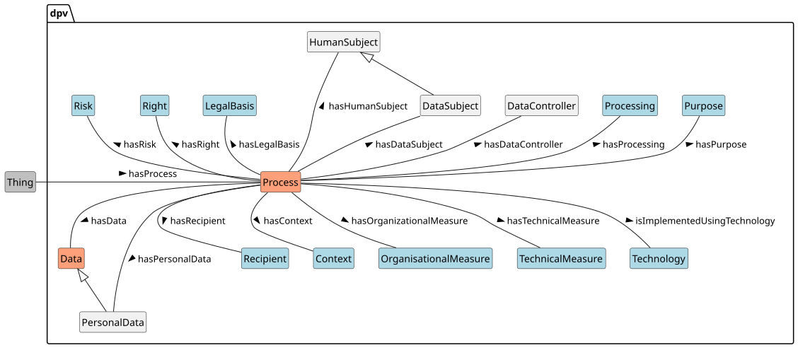
Overview of concepts in DPV - those in red have been added in v2.0, those in blue have had their scope expanded to include data and technologies
The 'Core' concepts and relationships in DPV represent and associate relevant information regarding the what, how, where, who, why of personal data and its processing. These are:
Concept
Relation
[=Data=] and [=PersonalData=]
[=hasData=] and [=hasPersonalData=]
[=Purpose=]
[=hasPurpose=]
[=Processing=]
[=hasProcessing=]
[=Entity=]
[=hasEntity=]
[=DataController=]
[=hasDataController=]
[=DataProcessor=]
[=hasDataProcessor=]
[=HumanSubject=]/[=DataSubject=]
[=hasHumanSubject=]/[=hasDataSubject=]
[=Recipient=]
[=hasRecipient=]
[=TechnicalMeasure=]
[=hasTechnicalMeasure=]
[=OrganisationalMeasure=]
[=hasOrganisationalMeasure=]
[=LegalBasis=]
[=hasLegalBasis=]
[=Right=]
[=hasRight=]
[=Risk=]
[=hasRisk=]
[=Context=]
[=hasContext=]
[=Technology=]
[=isImplementedUsingTechnology=]
Taxonomies
The rest of the document expands on the core concepts through the following taxonomies.
Risk & Impacts for risk assessment, management, and expression of consequences and impacts associated with processing.
Rights and Rights Exercise for specifying what rights are applicable, how they can be exercised, and how to provide information associated with rights.
Rules for expressing constraints, requirements, and other forms of rules that can specify or assist in interpreting what is permitted, prohibited, mandatory, etc.
In addition to these the Extensions section describes the available extensions which also provide additional taxonomies for specific concepts within the DPV.
Process
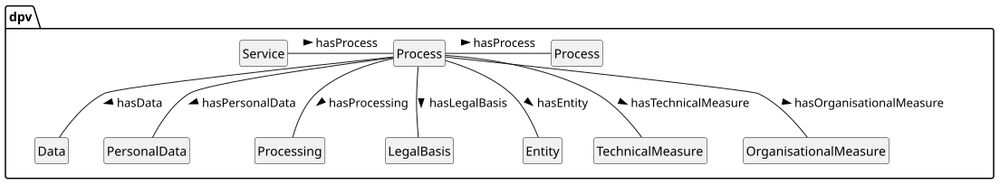
Example of Process being associated with other DPV concepts
To 'group' the core concepts together within a specific use-case, the concept [=Process=] and relation [=hasProcess=] are useful (the concept [=PersonalDataHandling=] was used in earlier versions for the same). For example, a 'process' about a specific application can represent the associated purposes, personal data, legal basis, etc. using the relations and provided taxonomies. Involvement or association of a process is indicated with the relation [=hasProcess=].
The following processes categories are provided to indicate e.g. the process is or is not expected to involve personal data:
dpv:NonPersonalDataProcess: An action, activity, or method involving non-personal data, and asserting that no personal data is involved
go to full definition
dpv:PersonalDataHandling: An abstract concept describing 'personal data handling'
go to full definitiondeprecated in next version
dpv:PersonalDataProcess: An action, activity, or method involving personal data
go to full definition
dpv:Service: A service is a process where one entity provides some benefit or assistance to another entity
go to full definition
Nested Processes
Instances of Process can be nested, which means one instance can contain other instances, much like a box with several smaller boxes inside. This permits breaking down complex or dense use-cases into more granular ones and representing them in a more precise and modular fashion. Such a representation also facilitates reuse of the granular or modular processes, or in defining 'templates' and 'patterns', for example to craft a single process representing collecting and storing email addresses and using it in different processes for different purposes.
From the earlier example, consider the situation where a single Process instance consists of two additional instances representing: (i) data is stored using a data processor, (ii) data is used for Marketing. While it is certainly possible to represent all of this information within one single instance of Process, the adopter may decide to create separate instances of Process based on requirements such as reflecting similar separations for legal documentation or accountability purposes.
Interpretation of Process
Where multiple concepts such as purposes and data are present in the same process, the interpretation is that they all apply e.g. each purpose applies to each personal data, and so on. If this is not the case, then nested processes should be used to separate the groups so that only those concepts are present within the same process which occur or are associated with each other.
Such arrangements can also be used to separate necessary and optional parts of a process, and can aid in avoiding duplication of processes where only a few elements need to be distinguished. For example, if a purpose has necessary and optional data associated with it, it is possible to create two nested processes containing the purpose and the necessary data in one process, and the process and optional data in another. However, such duplication is not necessary, the 'parent' or 'outer' process can contain the purpose and the nested processes can contain only the differentiating elements i.e. one nested process contains the necessary data and the other contains the optional data.
Processes are also be useful to indicate separation of responsibilities - for example where some processing is conducted by one processor and another by a different processor, with each nested process corresponding to the processing activities of one processor.
Services
The concept [=Service=] is a general concept that represents the legal and social notion of 'service', similar to provided 'product' or 'application' or 'process', and does not represent the technical notion of services such as those associated with operating systems or 'cloud services'. Service is useful to indicate a logical grouping of processes into a single 'unit' which has legal relevance - such as a contract covering the service or the provision of a service. To indicate a service is associated or involved, the relation [=hasService=] is provided.
To indicate the entities involved in services, the concepts [=ServiceProvider=] and [=ServiceConsumer=] are defined along with the relations [=hasServiceProvider=] and [=hasServiceConsumer=]. Entities acting as providers and consumers can also be controllers or processors or data subjects. For example, a controller or processor may be the service provider for another controller who is the service consumer. Similarly, a processor may be the service provider for data subjects under the instructions of a data controller.
Entities
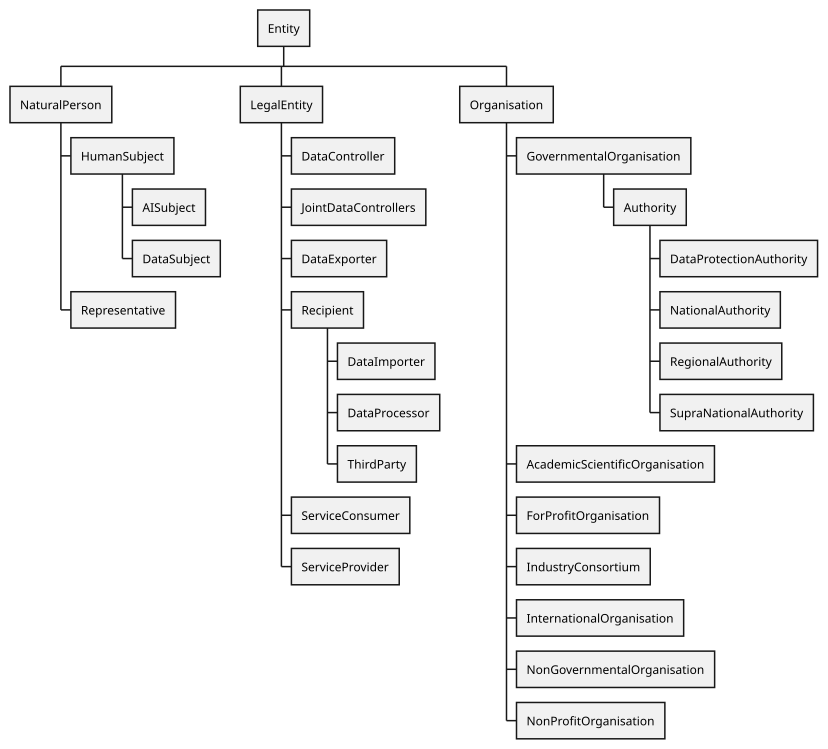
Overview of Entities defined in DPV. The use of "..." represents further concepts are available but not depicted within the diagram - click here to open diagram in a new window
Please refer to entities page for additional documentation, examples, references, and best practices. This document provides only a brief summary of the entities concepts.
DPV relies on existing well-founded interpretations for its concepts, which in this case relate to [=Entity=] as a generic universal concept and [=hasEntity=] as the relation used to associate it. The concept [=LegalEntity=] refers to entities defined legally or within legal norms. Expanding on these, DPV provides a taxonomy of entities based on their application within laws and use-cases in the form of Legal roles, such as [=DataController=], [=DataSubject=], and [=Authority=] along with corresponding relations [=hasDataController=], [=hasDataProcessor=], and [=hasAuthority=]. Later, these concepts are expanded into taxonomies for different kinds of entities categorised under a common concept. For example, as categories of Organisations.
dpv:LegalEntity: A human or non-human 'thing' that constitutes as an entity and which is recognised and defined in law
go to full definition
Legal Role is the role taken on by a legal entity based on definitions or criteria from laws, regulations, or other such normative sources. Legal roles assist in representing the role and responsibility of an entity within the context of processing, and from this to determine the requirements and obligations that should apply, and their compliance or conformance. Concepts are also accompanied with relations to enable using or associating them within the context.
dpv:DataController: The individual or organisation that decides (or controls) the purpose(s) of processing personal data.
go to full definition
dpv:JointDataControllers: A group of Data Controllers that jointly determine the purposes and means of processing
go to full definition
dpv:DataExporter: An entity that 'exports' data where exporting is considered a form of data transfer
go to full definition
dpv:DataImporter: An entity that 'imports' data where importing is considered a form of data transfer
go to full definition
dpv:DataProcessor: A ‘processor’ means a natural or legal person, public authority, agency or other body which processes data on behalf of the controller.
go to full definition
dpv:DataSubProcessor: A 'sub-processor' is a processor engaged by another processor
go to full definition
dpv:ServiceConsumer: The entity that consumes or receives the service
go to full definition
dpv:ThirdParty: A ‘third party’ means any natural or legal person other than - the entities directly involved or operating under those directly involved in a process
go to full definition
Authorities
The concept [=Authority=] is a specific Governmental Organisation authorised to enforce a law or regulation. Authorities can be associated with a specific domain, topic, or jurisdiction. DPV currently defines regional authorities for [=NationalAuthority=], [=RegionalAuthority=], and [=SupraNationalAuthority=], and [=DataProtectionAuthority=] represents authorities associated with data protection and privacy. To associate authorities with concepts, the relations [=hasAuthority=] to indicate an authority is applicable within a context and [=isAuthorityFor=] to indicate the authority's scope or applicability are provided.
dpv:DataProtectionAuthority: An authority tasked with overseeing legal compliance regarding privacy and data protection laws.
go to full definition
dpv:NationalAuthority: An authority tasked with overseeing legal compliance for a nation
go to full definition
dpv:RegionalAuthority: An authority tasked with overseeing legal compliance for a region
go to full definition
dpv:SupraNationalAuthority: An authority tasked with overseeing legal compliance for a supra-national union e.g. EU
go to full definition
Organisation
DPV provides a taxonomy of organisations based on aspects such as whether they are non-profit, international, or governmental. These concepts are useful to accurately represent the nature of organisations.
dpv:AcademicScientificOrganisation: Organisations related to academia or scientific pursuits e.g. Universities, Schools, Research Bodies
go to full definition
dpv:Clinic: An organisation that is a smaller healthcare facility offering outpatient medical services for diagnosis and treatment
go to full definition
dpv:EducationalOrganisation: An organisation focused on delivering formal or informal education, training, or research
go to full definition
dpv:EmergencyServiceProvider: An organisation tasked with providing emergency services such as by responding rapidly to urgent situations to protect lives, property, and the environment
go to full definition
dpv:AmbulanceProvider: An organisation that that offers transportation and medical care to patients requiring urgent medical attention
go to full definition
dpv:EmergencyHealthcareProvider: An organisation that is an emergency service provider focused on delivering immediate medical care to patients in critical or life-threatening situations
go to full definition
dpv:FireDepartment: An organisation that is an emergency service provider for fire prevention, firefighting, and rescue services
go to full definition
dpv:ForProfitOrganisation: An organisation that aims to achieve profit as its primary goal
go to full definition
dpv:GovernmentalOrganisation: An organisation managed or part of government
go to full definition
dpv:HealthcareOrganisation: An organisation that delivers medical services, promotes health, and provides care for individuals and communities
go to full definition
dpv:Hospital: An organisation that provides comprehensive medical treatment, including emergency care, surgeries, and inpatient services
go to full definition
dpv:IndustryConsortium: A consortium established and comprising on industry organisations
go to full definition
dpv:InternationalOrganisation: An organisation and its subordinate bodies governed by public international law, or any other body which is set up by, or on the basis of, an agreement between two or more countries
go to full definition
dpv:JudicialOrganisation: An organisation involved in interpreting and applying the law, resolving disputes, and administering justice as part of the judicial system
go to full definition
dpv:LawEnforcementOrganisation: An organisation that is an agency responsible for enforcing laws, maintaining public order, and ensuring public safety
go to full definition
dpv:NonGovernmentalOrganisation: An organisation not part of or independent from the government
go to full definition
dpv:NonProfitOrganisation: An organisation that does not aim to achieve profit as its primary goal
go to full definition
dpv:ReligiousAssociations: An organisations that supports the practice, promotion, and management of religious activities and beliefs
go to full definition
Human/Data Subjects
DPV provides a taxonomy of [=HumanSubject=] categories to assist with describing what kind of individuals or groups are associated with an use-case. These can be indicated through the relation [=hasHumanSubject=]. Some examples of such types are agency-based roles: [=Adult=] and [=Child=], [=ParentOfHuman=], [=GuardianOfHuman=]; those associated with vulnerability: [=VulnerableHuman=], [=ElderlyHuman=], [=AsylumSeeker=]; domain-specific roles such as [=Patient=], [=Employee=], [=Student=], jurisdictional roles such as [=Citizen=], [=NonCitizen=], [=Immigrant=]; and general roles such as [=User=], [=Member=], [=Participant=], and [=Client=].
[=DataSubject=] is a specific category of [=HumanSubject=] that indicates the person is the subject of (their personal) data. It can be associated through the relation [=hasDataSubject=].
dpv:HumanSubject: The individual (or category of individuals) that is the subject within some context such as personal data (dpv:DataSubject) or technology (tech:Subject)
go to full definition
dpv:Adult: A natural person that is not a child i.e. has attained some legally specified age of adulthood
go to full definition
dpv:Child: A 'child' is a natural legal person who is below a certain legal age depending on the legal jurisdiction.
go to full definition
dpv:ElderlyHuman: Humans that are considered elderly (i.e. based on age)
go to full definition
dpv:MentallyVulnerableHuman: Humans that are considered mentally vulnerable within the context
go to full definition
dpv:MentallyVulnerableDataSubject: Data subjects that are considered mentally vulnerable
go to full definition
dpv:VulnerableDataSubject: Humans which should be considered 'vulnerable' and therefore would require additional measures and safeguards
go to full definition
dpv:ElderlyDataSubject: Data subjects that are considered elderly (i.e. based on age)
go to full definition
dpv:MentallyVulnerableDataSubject: Data subjects that are considered mentally vulnerable
go to full definition
Overview of Purpose taxonomy in DPV - click here to open diagram in a new window
Please refer to purposes page for additional documentation, examples, references, and best practices. This document provides only a brief summary of the purposes concepts.
DPV’s taxonomy of purposes is used to represent the goal or reason associated with processing of personal data and use of technologies. For this, purposes are organised within DPV based on several factors such as: management functions related to information (e.g. records, account, finance), fulfilment of objectives (e.g. delivery of goods), providing goods and services (e.g. service provision), intended benefits (e.g. optimisations for service provider or consumer), and legal compliance.
DPV provides a taxonomy of Purpose instances for use with [=hasPurpose=] relation. In addition, DPV also defines the concept [=Sector=] (associated using [=hasSector=]) to indicate a contextual interpretation of the purpose within a specified sector. The [[[SECTOR]]] provide further concepts for purposes specific to a sector, for example [[SECTOR-EDUCATION]], [[SECTOR-HEALTH]], and [[SECTOR-LAW]].
dpv:AccountManagement: Account Management refers to purposes associated with account management, such as to create, provide, maintain, and manage accounts
go to full definition
dpv:CommercialPurpose: Purposes associated with processing activities performed in a commercial setting or with intention to commercialise
go to full definition
dpv:CommercialResearch: Purposes associated with conducting research in a commercial setting or with intention to commercialise e.g. in a company or sponsored by a company
go to full definition
dpv:CommunicationManagement: Communication Management refers to purposes associated with providing or managing communication activities e.g. to send an email for notifying some information
go to full definition
dpv:CommunicationForCustomerCare: Customer Care Communication refers to purposes associated with communicating with customers for assisting them, resolving issues, ensuring satisfaction, etc. in relation to services provided
go to full definition
dpv:CustomerManagement: Customer Management refers to purposes associated with managing activities related with past, current, and future customers
go to full definition
dpv:CustomerCare: Customer Care refers to purposes associated with purposes for providing assistance, resolving issues, ensuring satisfaction, etc. in relation to services provided
go to full definition
dpv:CommunicationForCustomerCare: Customer Care Communication refers to purposes associated with communicating with customers for assisting them, resolving issues, ensuring satisfaction, etc. in relation to services provided
go to full definition
dpv:CustomerClaimsManagement: Customer Claims Management refers to purposes associated with managing claims, including repayment of monies owed
go to full definition
dpv:CustomerOrderManagement: Customer Order Management refers to purposes associated with managing customer orders i.e. processing of an order related to customer's purchase of good or services
go to full definition
dpv:CustomerRelationshipManagement: Customer Relationship Management refers to purposes associated with managing and analysing interactions with past, current, and potential customers
go to full definition
dpv:ImproveInternalCRMProcesses: Purposes associated with improving customer-relationship management (CRM) processes
go to full definition
dpv:CustomerSolvencyMonitoring: Customer Solvency Monitoring refers to purposes associated with monitor solvency of customers for financial diligence
go to full definition
dpv:EnforceSecurity: Purposes associated with ensuring and enforcing security for data, personnel, or other related matters
go to full definition
dpv:EnforceAccessControl: Purposes associated with conducting or enforcing access control as a form of security
go to full definition
dpv:IdentityAuthentication: Purposes associated with performing authentication based on identity as a form of security
go to full definition
dpv:MisusePreventionAndDetection: Prevention and Detection of Misuse or Abuse of services
go to full definition
dpv:FraudPreventionAndDetection: Purposes associated with fraud detection, prevention, and mitigation
go to full definition
dpv:CounterMoneyLaundering: Purposes associated with detection, prevention, and mitigation of mitigate money laundering
go to full definition
dpv:MaintainFraudDatabase: Purposes associated with maintaining a database related to identifying and identified fraud risks and fraud incidents
go to full definition
dpv:Verification: Purposes association with verification e.g. information, identity, integrity
go to full definition
dpv:AgeVerification: Purposes associated with verifying or authenticating age or age related information as a form of security
go to full definition
dpv:IdentityVerification: Purposes associated with verifying or authenticating identity as a form of security
go to full definition
dpv:EstablishContractualAgreement: Purposes associated with carrying out data processing to establish an agreement, such as for entering into a contract
go to full definition
dpv:FulfilmentOfObligation: Purposes associated with carrying out data processing to fulfill an obligation
go to full definition
dpv:FulfilmentOfContractualObligation: Purposes associated with carrying out data processing to fulfill a contractual obligation
go to full definition
dpv:LegalCompliance: Purposes associated with carrying out data processing to fulfill a legal or statutory obligation
go to full definition
dpv:ProtectionOfIPR: Purposes associated with the protection of intellectual property rights
go to full definition
dpv:HumanResourceManagement: Purposes associated with managing humans and 'human resources' within the organisation for effective and efficient operations.
go to full definition
dpv:PersonnelManagement: Purposes associated with management of personnel associated with the organisation e.g. evaluation and management of employees and intermediaries
go to full definition
dpv:PersonnelHiring: Purposes associated with management and execution of hiring processes of personnel
go to full definition
dpv:PersonnelOnboarding: Purposes associated with onboarding and integration of personnel within an organisation
go to full definition
dpv:RecruitmentAdvertising: Purposes associated with advertisement for Recruitments and personnel hiring
go to full definition
dpv:RecruitmentTargetedAdvertising: Purposes associated with targeted advertisement for Recruitments and personnel hiring
go to full definition
dpv:RecruitmentManagement: Purposes assocaited with recruitment of personnel, which includes identifying, sourcing, screening, filtering, shortlisting, and interviewing candidates
go to full definition
dpv:RecruitmentApplicantBackgroundCheck: Purposes assocaited with conducting background checks for prospective and current job applicants for recruitment
go to full definition
dpv:RecruitmentApplicantCriminalBackgroundCheck: Purposes associated with conducting criminal background assessment for prospective and current job applicants for recruitment
go to full definition
dpv:RecruitmentApplicantInformationAuthentication: Purposes associated with authentication and verification of information as part of recruitment
go to full definition
dpv:RecruitmentApplicantSelection: Purposes associated with determination or selection of candidates, whether for a specific job or job pool, or for a specific stage as part of recruitment
go to full definition
dpv:RecruitmentApplicationManagement: Purposes associated with managing job applications for recruitment
go to full definition
dpv:RecruitmentApplicationAnalysis: Purposes assocaited with analysis of job applications or job candidates for recruitment
go to full definition
dpv:RecruitmentApplicationScreening: Purposes associated with screening and filtering of job applications or job candidates for recruitment
go to full definition
dpv:RecruitmentInterviewManagement: Purposes associated conducting and managing interviews for recruitment
go to full definition
dpv:RecruitmentInterviewAnalysis: Purposes associated with analysis of interviews, including the people and involved, for recruitment
go to full definition
dpv:RecruitmentInterviewAssessment: Purposes associated with assessment of interviews, including assessment of people and information, for recruitment
go to full definition
dpv:RecruitmentInterviewScheduling: Purposes associated with scheduling interviews for recruitment
go to full definition
dpv:PersonnelMonitoring: Purposes associated with monitoring of personnel
go to full definition
dpv:PersonnelBehaviourMonitoring: Purposes associated with monitoring behaviour of personnel
go to full definition
dpv:PersonnelPerformanceManagement: Purposes associated with management of performance of personnel
go to full definition
dpv:PersonnelPerformanceEvaluation: Purposes associated with evaluation or assessment of performance of employees
go to full definition
dpv:PersonnelPerformanceMonitoring: Purposes associated with monitoring of performance of personnel
go to full definition
dpv:PersonnelPerformancePrediction: Purposes associated with prediction of performance of personnel
go to full definition
dpv:PersonnelPerformanceMonitoring: Purposes associated with monitoring of performance of personnel
go to full definition
dpv:PersonnelOffboarding: Purposes associated with offboarding of personnel i.e. activities and processes carried out when the person is exiting the company or role
go to full definition
dpv:PersonnelPayment: Purposes associated with management and execution of payment of personnel
go to full definition
dpv:PersonnelPerformanceManagement: Purposes associated with management of performance of personnel
go to full definition
dpv:PersonnelPerformanceEvaluation: Purposes associated with evaluation or assessment of performance of employees
go to full definition
dpv:PersonnelPerformanceMonitoring: Purposes associated with monitoring of performance of personnel
go to full definition
dpv:PersonnelPerformancePrediction: Purposes associated with prediction of performance of personnel
go to full definition
dpv:PersonnelPromotionManagement: Purposes associated with determination and management of promotion of personnel
go to full definition
dpv:PersonnelTerminationManagement: Purposes associated with determination and management of termination of personnel
go to full definition
dpv:PersonnelWorkloadManagement: Purposes assocaited with determination, scheduling, planning, and carrying out workload management of personnel
go to full definition
dpv:Marketing: Purposes associated with conducting marketing in relation to organisation or products or services e.g. promoting, selling, and distributing
go to full definition
dpv:Advertising: Purposes associated with conducting advertising i.e. process or artefact used to call attention to a product, service, etc. through announcements, notices, or other forms of communication
go to full definition
dpv:PersonalisedAdvertising: Purposes associated with creating and providing personalised advertising
go to full definition
dpv:TargetedAdvertising: Purposes associated with creating and providing personalised advertisement where the personalisation is targeted to a specific individual or group of individuals
go to full definition
dpv:RecruitmentTargetedAdvertising: Purposes associated with targeted advertisement for Recruitments and personnel hiring
go to full definition
dpv:PoliticalCampaign: Purposes associated with political campaign activities related to promotion and advertisement of positions and candidates in elections at local, state or regional, or national and international levels
go to full definition
dpv:RecruitmentAdvertising: Purposes associated with advertisement for Recruitments and personnel hiring
go to full definition
dpv:RecruitmentTargetedAdvertising: Purposes associated with targeted advertisement for Recruitments and personnel hiring
go to full definition
dpv:DirectMarketing: Purposes associated with conducting direct marketing i.e. marketing communicated directly to the individual
go to full definition
dpv:PublicRelations: Purposes associated with managing and conducting public relations processes, including creating goodwill for the organisation
go to full definition
dpv:SocialMediaMarketing: Purposes associated with conducting marketing through social media
go to full definition
dpv:NonCommercialPurpose: Purposes associated with processing activities performed in a non-commercial setting or without intention to commercialise
go to full definition
dpv:NonCommercialResearch: Purposes associated with conducting research in a non-commercial setting e.g. for a non-profit-organisation (NGO)
go to full definition
dpv:OrganisationGovernance: Purposes associated with conducting activities and functions for governance of an organisation
go to full definition
dpv:DisputeManagement: Purposes associated with activities that manage disputes by natural persons, private bodies, or public authorities relevant to organisation
go to full definition
dpv:MemberPartnerManagement: Purposes associated with maintaining a registry of shareholders, members, or partners for governance, administration, and management functions
go to full definition
dpv:OrganisationComplianceManagement: Purposes associated with managing compliance for organisation in relation to internal policies
go to full definition
dpv:OrganisationRiskManagement: Purposes associated with managing risk for organisation's activities
go to full definition
dpv:Personalisation: Purposes associated with creating and providing customisation based on attributes and/or needs of person(s) or context(s).
go to full definition
dpv:PersonalisedAdvertising: Purposes associated with creating and providing personalised advertising
go to full definition
dpv:TargetedAdvertising: Purposes associated with creating and providing personalised advertisement where the personalisation is targeted to a specific individual or group of individuals
go to full definition
dpv:RecruitmentTargetedAdvertising: Purposes associated with targeted advertisement for Recruitments and personnel hiring
go to full definition
dpv:PoliticalCampaign: Purposes associated with political campaign activities related to promotion and advertisement of positions and candidates in elections at local, state or regional, or national and international levels
go to full definition
dpv:ServicePersonalisation: Purposes associated with providing personalisation within services or product or activities
go to full definition
dpv:PersonalisedBenefits: Purposes associated with creating and providing personalised benefits for a service
go to full definition
dpv:ProvidePersonalisedRecommendations: Purposes associated with creating and providing personalised recommendations
go to full definition
dpv:ProvideEventRecommendations: Purposes associated with creating and providing personalised recommendations for events
go to full definition
dpv:ProvideProductRecommendations: Purposes associated with creating and providing product recommendations e.g. suggest similar products
go to full definition
dpv:UserInterfacePersonalisation: Purposes associated with personalisation of interfaces presented to the user
go to full definition
dpv:PublicBenefit: Purposes undertaken and intended to provide benefit to public or society
go to full definition
dpv:CombatClimateChange: Purposes associated with combating the causes and consequences of climate change, including reducing gas emissions and fighting emergencies such as floods or wildfires
go to full definition
dpv:Counterterrorism: Purposes associated with activities that detect, prevent, mitigate, or otherwise perform activities to combat or eliminate terrorism (also referred to as anti-terrorism)
go to full definition
dpv:DataAltruism: Purposes associated with the voluntary sharing of data for the general interest of the public, such as healthcare or combating climate change
go to full definition
dpv:ImproveHealthcare: Purposes associated with improving healthcare systems such as for personalised treatments and curing chronic diseases
go to full definition
dpv:ImprovePublicServices: Purposes associated with improving the provision of public services, such as public safety, education or law enforcement
go to full definition
dpv:ImproveTransportMobility: Purposes associated with improving traffic, public transport systems or costs for drivers
go to full definition
dpv:ProtectionOfNationalSecurity: Purposes associated with the protection of national security
go to full definition
dpv:ProtectionOfPublicSecurity: Purposes associated with the protection of public security
go to full definition
dpv:ProvideOfficialStatistics: Purposes associated with facilitating the development, production and dissemination of reliable official statistics
go to full definition
dpv:PublicPolicyMaking: Purposes associated with public policy making, such as the development of new laws
go to full definition
dpv:RecordManagement: Purposes associated with manage creation, storage, and use of records relevant to operations, events, and processes e.g. to store logs or access requests
go to full definition
dpv:ResearchAndDevelopment: Purposes associated with conducting research and development for new methods, products, or services
go to full definition
dpv:AcademicResearch: Purposes associated with conducting or assisting with research conducted in an academic context e.g. within universities
go to full definition
dpv:CommercialResearch: Purposes associated with conducting research in a commercial setting or with intention to commercialise e.g. in a company or sponsored by a company
go to full definition
dpv:NonCommercialResearch: Purposes associated with conducting research in a non-commercial setting e.g. for a non-profit-organisation (NGO)
go to full definition
dpv:ScientificResearch: Purposes associated with scientific research
go to full definition
dpv:ServiceProvision: Purposes associated with providing service or product or activities
go to full definition
dpv:PaymentManagement: Purposes associated with processing and managing payment in relation to service, including invoicing and records
go to full definition
dpv:RepairImpairments: Purposes associated with identifying, rectifying, or otherwise undertaking activities intended to fix or repair impairments to existing functionalities
go to full definition
dpv:RequestedServiceProvision: Purposes associated with delivering services as requested by user or consumer
go to full definition
dpv:DeliveryOfGoods: Purposes associated with delivering goods and services requested or asked by consumer
go to full definition
dpv:SearchFunctionalities: Purposes associated with providing searching, querying, or other forms of information retrieval related functionalities
go to full definition
dpv:SellProducts: Purposes associated with selling products or services
go to full definition
dpv:SellDataToThirdParties: Purposes associated with selling or sharing data or information to third parties
go to full definition
dpv:SellInsightsFromData: Purposes associated with selling or sharing insights obtained from analysis of data
go to full definition
dpv:SellProductsToDataSubject: Purposes associated with selling products or services to the user, consumer, or data subjects
go to full definition
dpv:ServiceOptimisation: Purposes associated with optimisation of services or activities
go to full definition
dpv:OptimisationForConsumer: Purposes associated with optimisation of activities and services for consumer or user
go to full definition
dpv:OptimiseUserInterface: Purposes associated with optimisation of interfaces presented to the user
go to full definition
dpv:OptimisationForController: Purposes associated with optimisation of activities and services for provider or controller
go to full definition
dpv:ImproveExistingProductsAndServices: Purposes associated with improving existing products and services
go to full definition
dpv:ImproveInternalCRMProcesses: Purposes associated with improving customer-relationship management (CRM) processes
go to full definition
dpv:IncreaseServiceRobustness: Purposes associated with improving robustness and resilience of services
go to full definition
dpv:InternalResourceOptimisation: Purposes associated with optimisation of internal resource availability and usage for organisation
go to full definition
dpv:ServicePersonalisation: Purposes associated with providing personalisation within services or product or activities
go to full definition
dpv:PersonalisedBenefits: Purposes associated with creating and providing personalised benefits for a service
go to full definition
dpv:ProvidePersonalisedRecommendations: Purposes associated with creating and providing personalised recommendations
go to full definition
dpv:ProvideEventRecommendations: Purposes associated with creating and providing personalised recommendations for events
go to full definition
dpv:ProvideProductRecommendations: Purposes associated with creating and providing product recommendations e.g. suggest similar products
go to full definition
dpv:UserInterfacePersonalisation: Purposes associated with personalisation of interfaces presented to the user
go to full definition
dpv:ServiceRegistration: Purposes associated with registering users and collecting information required for providing a service
go to full definition
dpv:ServiceUsageAnalytics: Purposes associated with conducting analysis and reporting related to usage of services or products
go to full definition
dpv:TechnicalServiceProvision: Purposes associated with managing and providing technical processes and functions necessary for delivering services
go to full definition
dpv:VendorManagement: Purposes associated with manage orders, payment, evaluation, and prospecting related to vendors
go to full definition
dpv:VendorPayment: Purposes associated with managing payment of vendors
go to full definition
dpv:VendorRecordsManagement: Purposes associated with managing records and orders related to vendors
go to full definition
dpv:VendorSelectionAssessment: Purposes associated with managing selection, assessment, and evaluation related to vendors
go to full definition
Data & Personal Data
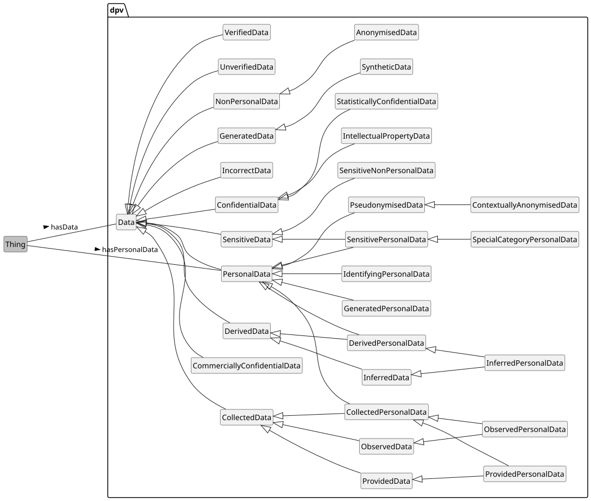
Data and Personal Data concepts defined in DPV - click here to open diagram in a new window
Please refer to personal data page for additional documentation, examples, references, and best practices. This document provides only a brief summary of the personal data concepts.
DPV provides the concept [=Data=] and relation [=hasData=] to indicate involvement or association of any data. The concept [=PersonalData=] and the relation [=hasPersonalData=] are provided to indicate what categories or instances of personal data are being processed. The DPV specification only provides a structure for describing personal data, e.g. as being sensitive. For specific categories of personal data for use-cases, [[[PD]]] provides additional concepts that extend the DPV's personal data taxonomy. This separation is to enable adopters to decide whether the extension's concepts are useful to them, or to use other external vocabularies, or define their own.
In addition to Personal Data, there may be a need to represent Non-Personal Data within the same contextual use-cases. For this, DPV provides the concepts [=NonPersonalData=] and [=SyntheticData=].
To indicate data categorised based on [=DataSource=], e.g. as "collected personal data", DPV provides: [=CollectedPersonalData=], [=DerivedPersonalData=], [=InferredPersonalData=], [=GeneratedPersonalData=], and [=ObservedPersonalData=].
For indicating personal data which is sensitive, the concept [=SensitivePersonalData=] is provided. For indicating special categories of data, the concept [=SpecialCategoryPersonalData=] is provided. In this, the concept sensitive indicates that the data needs additional considerations (and perhaps caution) when processing, such as by increasing its security, reducing usage, or performing impact assessments. Special categories, by contrast, are a 'special' type of sensitive personal data requiring additional considerations or obligations defined in laws (or through other forms) that regulate how they should be used or prohibit their use until specific obligations are met.
To specify data is anonymised, DPV provides two concepts. [=AnonymisedData=] for when data is completely anonymised and cannot be de-anonymised, which is a subtype of [=NonPersonalData=]. And, [=PseudonymisedData=] for when data has only been partially anonymised or de-anonymisation is possible, which is a subtype of [=PersonalData=].
To indicate data is unstructured (i.e. unknown or incomplete knowledge of model) the concept [=UnstructuredData=] is provided. To indicate category of data is unknown, e.g. whether it is personal or not, the concept [=UncategorisedData=] is provided.
DPV defines the following concepts for expressing information about data:
dpv:CollectedData: Data that has been obtained by collecting it from a source
go to full definition
dpv:CollectedPersonalData: Personal Data that has been collected from another source such as the Data Subject
go to full definition
dpv:ObservedPersonalData: Personal Data that has been collected through observation of the Data Subject(s)
go to full definition
dpv:ProvidedPersonalData: Personal Data that has been provided by an entity such as the Data Subject
go to full definition
dpv:ObservedData: Data that has been obtained through observations of a source
go to full definition
dpv:ObservedPersonalData: Personal Data that has been collected through observation of the Data Subject(s)
go to full definition
dpv:CommerciallyConfidentialData: Data that is considered confidential due to business/trade secrets, confidentiality agreements, or company secrets
go to full definition
dpv:IntellectualPropertyData: Data protected by Intellectual Property rights and regulations
go to full definition
dpv:ProfessionalConfidentialData: Data protected by professional secrecy or confidentiality, including but not limited to data covered by professional privilege or secrecy obligations such as that covered by lawyer or doctor-patient confidentiality and other forms of recognised professional confidentiality obligations
go to full definition
dpv:StatisticallyConfidentialData: Data protected through Statistical Confidentiality regulations and agreements
go to full definition
dpv:DerivedData: Data that has been obtained through derivations of other data
go to full definition
dpv:DerivedPersonalData: Personal Data that is obtained or derived from other data
go to full definition
dpv:InferredPersonalData: Personal Data that is obtained through inference from other data
go to full definition
dpv:InferredData: Data that has been obtained through inferences of other data
go to full definition
dpv:InferredPersonalData: Personal Data that is obtained through inference from other data
go to full definition
dpv:GeneratedData: Data that is generated or brought into existence without relation to existing data i.e. it is not derived or inferred from other data
go to full definition
dpv:SyntheticData: Synthetic data refers to artificially created data such that it is intended to resemble real data (personal or non-personal), but does not refer to any specific identified or identifiable individual, or to the real measure of an observable parameter in the case of non-personal data
go to full definition
dpv:IncorrectData: Data that is known to be incorrect or inconsistent with some requirements
go to full definition
dpv:AnonymisedData: Personal Data that has been (fully and completely) anonymised so that it is no longer considered Personal Data
go to full definition
dpv:PersonalData: Data directly or indirectly associated or related to an individual
go to full definition
dpv:CollectedPersonalData: Personal Data that has been collected from another source such as the Data Subject
go to full definition
dpv:ObservedPersonalData: Personal Data that has been collected through observation of the Data Subject(s)
go to full definition
dpv:ProvidedPersonalData: Personal Data that has been provided by an entity such as the Data Subject
go to full definition
dpv:DerivedPersonalData: Personal Data that is obtained or derived from other data
go to full definition
dpv:InferredPersonalData: Personal Data that is obtained through inference from other data
go to full definition
dpv:GeneratedPersonalData: Personal Data that is generated or brought into existence without relation to existing data i.e. it is not derived or inferred from other data
go to full definition
dpv:IdentifyingPersonalData: Personal Data that explicitly and by itself is sufficient to identify a person
go to full definition
dpv:PseudonymisedData: Pseudonymised Data is data that has gone a partial or incomplete anonymisation process by replacing the identifiable information with artificial identifiers or 'pseudonyms', and is still considered as personal data
go to full definition
dpv:ContextuallyAnonymisedData: Data that can be considered as being fully anonymised within the context but in actuality is not fully anonymised and is still personal data as it can be de-anonymised outside that context
go to full definition
dpv:SensitivePersonalData: Personal data that is considered 'sensitive' in terms of privacy and/or impact, and therefore requires additional considerations and/or protection
go to full definition
dpv:SpecialCategoryPersonalData: Sensitive Personal Data whose use requires specific additional legal permission or justification
go to full definition
dpv:SensitiveNonPersonalData: Non-personal data deemed sensitive
go to full definition
dpv:SensitivePersonalData: Personal data that is considered 'sensitive' in terms of privacy and/or impact, and therefore requires additional considerations and/or protection
go to full definition
dpv:SpecialCategoryPersonalData: Sensitive Personal Data whose use requires specific additional legal permission or justification
go to full definition
dpv:UncategorisedData: Data whose categorisation is not known e.g. whether it is personal or non-personal data
go to full definition
dpv:UnstructuredData: Data that is without a predefined data model or is not organised in a pre-defined manner
go to full definition
dpv:UnverifiedData: Data that has not been verified in terms of accuracy, inconsistency, or quality
go to full definition
dpv:VerifiedData: Data that has been verified in terms of accuracy, consistency, or quality
go to full definition
Processing Operations
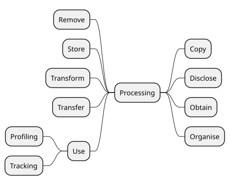
Processing concepts defined in DPV - click here to open diagram in a new window
Please refer to processing page for additional documentation, examples, references, and best practices. This document provides only a brief summary of the processing concepts.
DPV’s taxonomy of processing concepts reflects the variety of terms used to denote processing activities or operations involving personal data, such as those from [GDPR] Article.4-2 definition of processing. Real-world use of terms associated with processing rarely uses this same wording or terms, except in cases of specific domains and in legal documentation. On the other hand, common terms associated with processing are generally restricted to: collect, use, store, share, and delete.
DPV provides a taxonomy that aligns both the legal terminologies such as those defined by GDPR with those commonly used. For this, concepts are organised based on whether they subsume other concepts, e.g. Use is a broad concept indicating data is used, which DPV extends to define specific processing concepts for Analyse, Consult, Profiling, and Retrieving. Through this mechanism, whenever an use-case indicates it consults some data, it can be inferred that it also uses that data.
For concepts related to expressing contextual information associated with processing, such as storage conditions, automation, scale, see Processing Context section.
dpv:Anonymise: to irreversibly alter personal data in such a way that an unique data subject can no longer be identified directly or indirectly or in combination with other data
go to full definition
dpv:Tracking: to use data to track a specific factor (e.g. a human or their activities) across multiple distinct contexts
go to full definition
dpv:TrackingByFirstParty: to perform tracking where the performing entity is a first party within the context
go to full definition
dpv:TrackingByThirdParty: to perform tracking where the performing entity is a third party within the context
go to full definition
Profiling & Tracking
To indicate that the process involves profiling and tracking processing operations, the concepts [=Profiling=] and [=Tracking=] are provided. While profiling and tracking are more complex concepts as compared to collect or use or store as 'simple' operations, they are included in the processing operations taxonomy as they represent specific ways of using (personal) data, and by themselves do not provide sufficient indication of the purpose or intended objective for why they are being performed.
[=Tracking=] is further distinguished as [=TrackingByFirstParty=] and [=TrackingByThirdParty=] to reflect the commonly used terms for tracking performed by entities considered as 'first' and 'third' parties within a context. While the DPV itself does not (yet) model these first/third relations, these concepts reflect existing uses of the term and therefore the DPV relies on these existing definitions and uses to guide the usage of these concepts. For reference, see the Do Not Track terminology page. Similarly, DPV's definition of [=Profiling=] is a minimal representation of creating a profile of a person based on the use of (some) data. To indicate specific definitions of profiling, e.g. in a law like the EU's GDPR, this concept should be extended to reflect the specific definition, such as the `eu-gdpr:Profiling` concept defined in the [[EU-GDPR]] extension based on the definition in GDPR's Article 4-4.
Processing Context
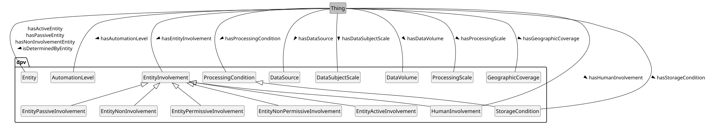
Please refer to processing context page for additional documentation, examples, references, and best practices. This document provides only a brief summary of the processing context concepts.
Processing & Storage Conditions
To describe conditions associated with processing, such as its duration, or specific locations, the concept [=ProcessingCondition=] provided and extended as [=ProcessingDuration=] and [=ProcessingLocation=] along with the relation [=hasProcessingCondition=]. Storage, which is a specific form of processing, has additional dedicated concepts as [=StorageCondition=] as it is a commonly used concept. The concepts are useful to describe processing and storage conditions in policies, conditions, rules, or documentation - which are important tools for implementing and determining data protection and privacy considerations as well as legal compliance.
The concept [=StorageCondition=] and the relation [=hasStorageCondition=] represent the general or abstract conditions associated with storage of data. This is specialised to indicate [=StorageDuration=], [=StorageDeletion=], [=StorageRestoration=], and [=StorageLocation=].
dpv:ProcessingDuration: Conditions regarding duration or temporal limitation for processing
go to full definition
dpv:StorageDuration: Duration or temporal limitation on storage of data
go to full definition
dpv:ProcessingLocation: Conditions regarding location or geospatial scope where processing takes places
go to full definition
dpv:StorageLocation: Location or geospatial scope where the data is stored
go to full definition
dpv:StorageCondition: Conditions required or followed regarding storage of data
go to full definition
dpv:StorageDeletion: Deletion or Erasure of data including any deletion guarantees
go to full definition
dpv:StorageDuration: Duration or temporal limitation on storage of data
go to full definition
dpv:StorageLocation: Location or geospatial scope where the data is stored
go to full definition
dpv:StorageRestoration: Regularity and temporal span of data restoration/backup mechanisms that guarantee that data is preserved
go to full definition
Automation
To indicate processing involves automation, the concept [=AutomationLevel=] and relation [=hasAutomationLevel=] are provided to specify the extent to which automation is implemented or applies. These levels are defined based on [[[ISO-22989]]].
dpv:AssistiveAutomation: Level of automation corresponding to Level 1 in ISO/IEC 22989:2022 where automation is limited to parts of the system or a specific part of the system in a manner that does not change the control of the human in using/driving the system
go to full definition
dpv:Autonomous: Level of automation corresponding to Level 6 in ISO/IEC 22989:2022 where the automation in system is capable of modifying its operation domain or its goals without external intervention, control or oversight
go to full definition
dpv:ConditionalAutomation: Level of automation corresponding to Level 3 in ISO/IEC 22989:2022 where the automation is sufficient to perform most tasks of the system with the human present to take over where necessary
go to full definition
dpv:FullAutomation: Level of automation corresponding to Level 5 in ISO/IEC 22989:2022 where the automation in system is capable of performing all its tasks regardless of the conditions without human involvement
go to full definition
dpv:HighAutomation: Level of automation corresponding to Level 4 in ISO/IEC 22989:2022 where the automation in system is capable of performing all its tasks within specific controlled conditions without human involvement
go to full definition
dpv:NotAutomated: Level of automation corresponding to Level 0 in ISO/IEC 22989:2022 where there is no automation in the system
go to full definition
dpv:PartialAutomation: Level of automation corresponding to Level 2 in ISO/IEC 22989:2022 where the automation is present in multiple parts of the system or in a manner that does not require the human to control/use these parts while still retaining control over the system
go to full definition
Entity/Human Involvement
To specify how entities are involved in processing and technologies, including humans, the concept [=EntityInvolvement=] is provided along with the relation [=hasEntityInvolvement=]. Involvement of entities is categorised as 'permissive' for entities being able to perform an activity, and 'non-permissive' for when entities cannot perform an activity. A taxonomy of concepts is provided for permissive and non-permissive involvements to describe scenarios such as entity being able to opt-in or not being able to opt-out, or being able to reverse the output of a process. Involvement is also categorised as 'passive' and 'active' based on whether the entity passively or actively interacts with a 'process' or 'technology'.
To specifically indicate how humans are involved, the concept [=HumanInvolvement=] is provided with the relation [=hasHumanInvolvement=]. The existing terms used such as 'human in/on/out-of the loop' are not used directly as they have conflicting and ambiguous definitions and uses across different documents. Instead, the DPV concepts provide an explicit and unambiguous indication of human involvement - such as whether they are involved to provide inputs, make decisions, have oversight, or verify processes.
dpv:EntityActiveInvolvement: Involvement where entity is 'actively' involved
go to full definition
dpv:EntityIntendedInvolvement: Status indicating the involvement of the entity is intended
go to full definition
dpv:EntityInvolvementStatus: Status indicating whether an entity is involved
go to full definition
dpv:EntityNonPermissiveInvolvement: Involvement of an entity in specific context where it is not permitted or able to do something
go to full definition
dpv:CannotChallengeProcess: Involvement where entity cannot challenge the process of specified context
go to full definition
dpv:CannotChallengeProcessInput: Involvement where entity cannot challenge input of specified context
go to full definition
dpv:CannotChallengeProcessOutput: Involvement where entity cannot challenge the output of specified context
go to full definition
dpv:CannotCorrectProcess: Involvement where entity cannot correct the process of specified context
go to full definition
dpv:CannotCorrectProcessInput: Involvement where entity cannot correct input of specified context
go to full definition
dpv:CannotCorrectProcessOutput: Involvement where entity cannot correct the output of specified context
go to full definition
dpv:CannotObjectToProcess: Involvement where entity cannot object to process of specified context
go to full definition
dpv:CannotOptInToProcess: Involvement where entity cannot opt-in to specified context
go to full definition
dpv:CannotOptOutFromProcess: Involvement where entity cannot opt-out from specified context
go to full definition
dpv:CannotReverseProcessEffects: Involvement where entity cannot reverse effects of specified context
go to full definition
dpv:CannotReverseProcessInput: Involvement where entity cannot reverse input of specified context
go to full definition
dpv:CannotReverseProcessOutput: Involvement where entity cannot reverse output of specified context
go to full definition
dpv:CannotWithdrawFromProcess: Involvement where entity cannot withdraw a previously given assent from specified context
go to full definition
dpv:EntityPassiveInvolvement: Involvement where entity is 'passively' or 'not actively' involved
go to full definition
dpv:EntityPermissiveInvolvement: Involvement of an entity in specific context where it is permitted or able to do something
go to full definition
dpv:ChallengingProcess: Involvement where entity can challenge the process of specified context
go to full definition
dpv:ChallengingProcessInput: Involvement where entity can challenge input of specified context
go to full definition
dpv:ChallengingProcessOutput: Involvement where entity can challenge the output of specified context
go to full definition
dpv:CorrectingProcess: Involvement where entity can correct the process of specified context
go to full definition
dpv:CorrectingProcessInput: Involvement where entity can correct input of specified context
go to full definition
dpv:CorrectingProcessOutput: Involvement where entity can correct the output of specified context
go to full definition
dpv:ObjectingToProcess: Involvement where entity can object to process of specified context
go to full definition
dpv:OptingInToProcess: Involvement where entity can opt-in to specified context
go to full definition
dpv:OptingOutFromProcess: Involvement where entity can opt-out from specified context
go to full definition
dpv:ReversingProcessEffects: Involvement where entity can reverse effects of specified context
go to full definition
dpv:ReversingProcessInput: Involvement where entity can reverse input of specified context
go to full definition
dpv:ReversingProcessOutput: Involvement where entity can reverse output of specified context
go to full definition
dpv:WithdrawingFromProcess: Involvement where entity can withdraw a previously given assent from specified context
go to full definition
dpv:EntityUnintendedInvolvement: Status indicating the involvement of the entity is not intended
go to full definition
dpv:HumanInvolvement: The involvement of humans in specified context
go to full definition
dpv:HumanInvolved: Humans are involved in the specified context
go to full definition
dpv:HumanInvolvementForControl: Human involvement for the purposes of exercising control over the specified operations in context
go to full definition
dpv:HumanInvolvementForDecision: Human involvement for the purposes of exercising decisions over the specified operations in context
go to full definition
dpv:HumanInvolvementForInput: Human involvement for the purposes of providing inputs to the specified context
go to full definition
dpv:HumanInvolvementForIntervention: Human involvement for the purposes of exercising interventions over the specified operations in context
go to full definition
dpv:HumanInvolvementForOversight: Human involvement for the purposes of having oversight over the specified context regarding its operations, inputs, or outputs
go to full definition
dpv:HumanInvolvementForVerification: Human involvement for the purposes of verification of specified context to ensure its operations, inputs, or outputs are correct or are acceptable.
go to full definition
dpv:HumanNotInvolved: Humans are not involved in the specified context
go to full definition
Data Source
The concept [=DataSource=] and relation [=hasDataSource=] indicate the source of data. Here, it is important to note that 'source' is distinct from 'origin', where source is where the data came from and origin refers to where the data originated from. Data originated from a data subject can be collected and shared one entity to another, where each entity has as its source the previous entity it obtained the data from.
dpv:DataControllerDataSource: Data Sourced from Data Controller(s), e.g. a Controller inferring data or generating data
go to full definition
dpv:DataSubjectDataSource: Data Sourced from Data Subject(s), e.g. when data is collected via a form or observed from their activities
go to full definition
dpv:DataPublishedByDataSubject: Data is published by the data subject
go to full definition
dpv:NonPublicDataSource: A source of data that is not publicly accessible or available
go to full definition
dpv:PublicDataSource: A source of data that is publicly accessible or available
go to full definition
dpv:ThirdPartyDataSource: Data Sourced from a Third Party, e.g. when data is collected from an entity that is neither the Controller nor the Data Subject
go to full definition
Monitoring, Scoring, Decision Making
To indicate the processing or technology is performing some kind of decision making, the concept [=DecisionMaking=] is provided. If the processing or technology is automated, the concept [=AutomatedDecisionMaking=] is provided. To describe the logic involved in decision making, the concept [=AlgorithmicLogic=] is provided. If the processing or technology is performing some evaluation or scoring (e.g. of individuals), the concept [=EvaluationScoring=] is provided. If the processing or technologies are performing 'systematic monitoring' of individuals, the concept [=SystematicMonitoring=] is provided.
If the processing involves technologies that are being used 'innovatively', the concept [=InnovativeUseOfTechnology=] is provided. Innovative uses can be for existing technologies, described using [=InnovativeUseOfExistingTechnology=] or for new technologies which are described using [=InnovativeUseOfNewTechnologies=].
These concepts can be associated within the process or context through the relation [=hasContext=].
Scale of Processing
DPV provides the (qualitative) concept [=Scale=], with further specialisations for expressing [=DataVolume=], [=DataSubjectScale=], and [=GeographicCoverage=] related to activities. Along with these, DPV also provides a [=ProcessingScale=] to express combinations of these (e.g. [=LargeScaleProcessing=]). The relation [=hasScale=] is used to indicate the scale, with specific relations [=hasDataVolume=], [=hasDataSubjectScale=], [=hasGeographicCoverage=], and [=hasProcessingScale=] to indicate the different types of scales.
dpv:LargeScaleProcessing: Processing that takes place at large scales (as specified by some criteria)
go to full definition
dpv:MediumScaleProcessing: Processing that takes place at medium scales (as specified by some criteria)
go to full definition
dpv:SmallScaleProcessing: Processing that takes place at small scales (as specified by some criteria)
go to full definition
Technology
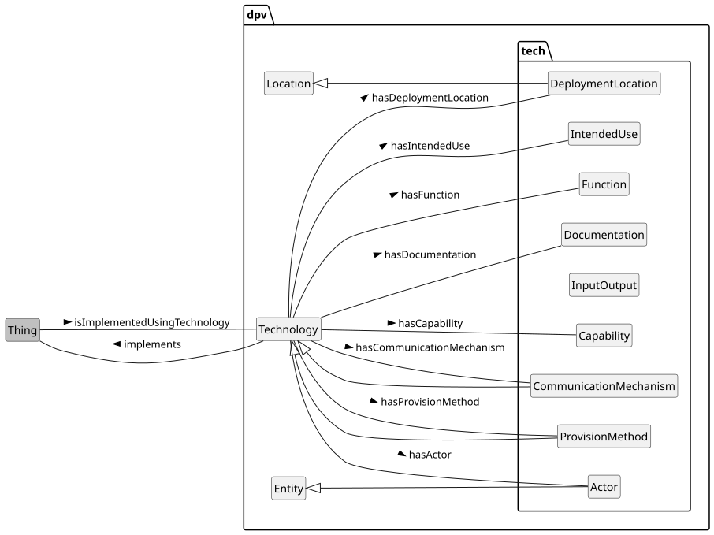
Specifying Technology using DPV with the TECH extension providing additional concepts
The concept [=Technology=] represents technologies involved e.g. those for processing of data, or for implementing technical and organisational measures. To indicate something is implemented using some technology, the relation [=isImplementedUsingTechnology=] is provided. To indicate which entity is implementing the specified context, the relation [=isImplementedByEntity=] is provided. The [[[TECH]]] extension provides additional concepts to describe the technology such as involved actors, intended use, capabilities and functions, and documentation.
General Context
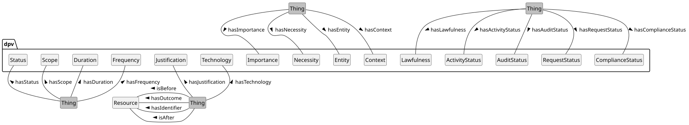
Representing contextual information - click here to open diagram in a new window
Please refer to context page for additional documentation, examples, references, and best practices. This document provides only a brief summary of the context concepts.
Duration, Frequency, Necessity
These concepts enable expressing information about [=Duration=], [=Frequency=], [=Applicability=], [=Importance=], and [=Necessity=] of a [=Context=] (which can be any other concept). In addition to these, the concept [=Justification=] is useful to provide justifications or reasons or explanations - such as for why something must take place or could not take place.
Each of these concepts has a corresponding relation to express them - [=hasDuration=], [=hasFrequency=], [=hasApplicability=], [=hasImportance=], [=hasNecessity=] with [=hasContext=] being the super-relation for these. Justifications are associated with using the relation [=hasJustification=].
dpv:Applicability: Concept provided to represent indication of cases where the information or context is not applicable (N/A) or not available or this is not known or determined yet. If the information is applicable and available, this concept should not be used.
go to full definition
dpv:NotApplicable: Concept indicating the information or context is not applicable
go to full definition
dpv:NotAvailable: Concept indicating the information or context is applicable but information is not yet available
go to full definition
dpv:UnknownApplicability: Concept indicating information or context availability is unknown i.e. it is not known if the information exists or is applicable and therefore statements about its availability cannot be made (yet)
go to full definition
dpv:EndlessDuration: Duration that is (known or intended to be) open ended or without an end
go to full definition
dpv:FixedOccurrencesDuration: Duration that takes place a fixed number of times e.g. 3 times
go to full definition
dpv:IndeterminateDuration: Duration that is indeterminate or cannot be determined
go to full definition
dpv:TemporalDuration: Duration that has a fixed temporal duration e.g. 6 months
go to full definition
dpv:UntilEventDuration: Duration that takes place until a specific event occurs e.g. Account Closure
go to full definition
dpv:UntilTimeDuration: Duration that has a fixed end date e.g. 2022-12-31
go to full definition
dpv:FeeRequirement: Concept indicating whether a fee is required
go to full definition
dpv:FeeNotRequired: Concept indicating a fee is not required. This is distinct from a Fee of zero as it indicates a fee is not applicable in the context
go to full definition
dpv:FeeRequired: Concept indicating a fee is required. The value of the fee should be specified using rdf:value or an another relevant means
go to full definition
dpv:Frequency: The frequency or information about periods and repetitions in terms of recurrence.
go to full definition
dpv:ContinuousFrequency: Frequency where occurrences are continuous
go to full definition
dpv:OftenFrequency: Frequency where occurrences are often or frequent, but not continuous
go to full definition
dpv:SingularFrequency: Frequency where occurrences are singular i.e. they take place only once
go to full definition
dpv:SporadicFrequency: Frequency where occurrences are sporadic or infrequent or sparse
go to full definition
dpv:Importance: An indication of 'importance' within a context
go to full definition
dpv:PrimaryImportance: Indication of 'primary' or 'main' or 'core' importance
go to full definition
dpv:SecondaryImportance: Indication of 'secondary' or 'minor' or 'auxiliary' importance
go to full definition
dpv:Justification: A form of documentation providing reasons, explanations, or justifications
go to full definition
dpv:Scope: Indication of the extent or range or boundaries associated with(in) a context
go to full definition
Status
To assist with expressing the state or status associated with various activities, DPV provides the [=Status=] concept that can be associated contextually using the [=hasStatus=] relation. Specific subtypes are provided as [=ActivityStatus=], [=ComplianceStatus=] including [=Lawfulness=], [=AuditStatus=], [=ConformanceStatus=], [=RequestStatus=], [=EntityInformedStatus=], [=IntentionStatus=], [=ExpectationStatus=], [=InvolvementStatus=], and [=NotificationStatus=]. The corresponding relations provided are: [=hasActivityStatus=], [=hasComplianceStatus=], [=hasLawfulness=], [=hasAuditStatus=], [=hasConformanceStatus=], [=hasRequestStatus=], [=hasInformedStatus=], [=hasIntention=], [=hasExpectation=], [=hasInvolvement=], and [=hasNotificationStatus=].
dpv:ActivityStatus: Status associated with activity operations and lifecycles
go to full definition
dpv:ActivityCompleted: State of an activity that has completed i.e. is fully in the past
go to full definition
dpv:ActivityHalted: State of an activity that was occurring in the past, and has been halted or paused or stopped
go to full definition
dpv:ActivityNotCompleted: State of an activity that could not be completed, but has reached some end state
go to full definition
dpv:ActivityOngoing: State of an activity occurring in continuation i.e. currently ongoing
go to full definition
dpv:ActivityPlanned: State of an activity being planned with concrete plans for implementation
go to full definition
dpv:ActivityProposed: State of an activity being proposed without any concrete plans for implementation
go to full definition
dpv:AuditStatus: Status associated with Auditing or Investigation
go to full definition
dpv:LawfulnessUnknown: State of the lawfulness not being known
go to full definition
dpv:Unlawful: State of being unlawful or legally non-compliant
go to full definition
dpv:NonCompliant: State of non-compliance where objectives have not been met, but have not been violated
go to full definition
dpv:PartiallyCompliant: State of partially being compliant i.e. only some objectives have been met, and others have not been in violation
go to full definition
dpv:ConformanceStatus: Status associated with conformance to a standard, guideline, code, or recommendation
go to full definition
dpv:ReuseCompatibility: Concept indicating whether the specified context is compatible with another earlier context
go to full definition
dpv:CompatibilityUnknown: Concept indicating the compatibility of the context with an earlier context is currently unknown
go to full definition
dpv:PrimaryUse: Concept indicating compatibility based on the use being either the original context or something that is compatible with it
go to full definition
dpv:SecondaryUse: Concept indicating incompatibility based on the use not being compatible with an earlier context
go to full definition
Overview of Technical & Organisational Measures in DPV (click to open in new window)
Please refer to Tech & Org measures page for additional documentation, examples, references, and best practices. This document provides only a brief summary of the Tech & Org measures concepts.
DPV's taxonomy of tech/org measures are structured into four groups representing [=TechnicalMeasure=] such as encryption or de-identification which operate at a technical level, [=OrganisationalMeasure=] such as policies and training which operate at an organisational level, [=LegalMeasure=] which are organisational measures with legal enforcement such as contracts and NDAs, and [=PhysicalMeasure=] which are associated with physical aspects such as environmental protection and physical security. Each of these is provided with a taxonomy that expands upon the core idea to provide a rich list of measures that are intended to protect personal data and technologies (and its associated entities and consequences).
To indicate applicability of measures, the relations [=hasTechnicalMeasure=], [=hasOrganisationalMeasure=], [=hasLegalMeasure=], and [=hasPhysicalMeasure=] are provided. In addition to these, specific relations are also provided for concepts commonly used or which are important for legal considerations - such as [=hasNotice=] and [=hasPolicy=].
dpv:LegalMeasure: Legal measures used to safeguard and ensure good practices in connection with data and technologies
go to full definition
dpv:OrganisationalMeasure: Organisational measures used to safeguard and ensure good practices in connection with data and technologies
go to full definition
dpv:PhysicalMeasure: Physical measures used to safeguard and ensure good practices in connection with data and technologies
go to full definition
dpv:TechnicalMeasure: Technical measures used to safeguard and ensure good practices in connection with data and technologies
go to full definition
Overview of Technical Measures taxonomy in DPV (click to open in new window)
dpv:AccessControlMethod: Methods which restrict access to a place or resource
go to full definition
dpv:UsageControl: Management of usage, which is intended to be broader than access control and may cover trust, digital rights, or other relevant controls
go to full definition
dpv:ActivityMonitoring: Monitoring of activities including assessing whether they have been successfully initiated and completed
go to full definition
dpv:AuthenticationProtocols: Protocols involving validation of identity i.e. authentication of a person or information
go to full definition
dpv:BiometricAuthentication: Use of biometric data for authentication
go to full definition
dpv:CryptographicAuthentication: Use of cryptography for authentication
go to full definition
dpv:Authentication-ABC: Use of Attribute Based Credentials (ABC) to perform and manage authentication
go to full definition
dpv:Authentication-PABC: Use of Privacy-enhancing Attribute Based Credentials (ABC) to perform and manage authentication
go to full definition
dpv:HashMessageAuthenticationCode: Use of HMAC where message authentication code (MAC) utilise a cryptographic hash function and a secret cryptographic key
go to full definition
dpv:MessageAuthenticationCodes: Use of cryptographic methods to authenticate messages
go to full definition
dpv:MultiFactorAuthentication: An authentication system that uses two or more methods to authenticate
go to full definition
dpv:PasswordAuthentication: Use of passwords to perform authentication
go to full definition
dpv:SingleSignOn: Use of credentials or processes that enable using one set of credentials to authenticate multiple contexts.
go to full definition
dpv:ZeroKnowledgeAuthentication: Authentication using Zero-Knowledge proofs
go to full definition
dpv:AuthorisationProtocols: Protocols involving authorisation of roles or profiles to determine permission, rights, or privileges
go to full definition
dpv:CryptographicMethods: Use of cryptographic methods to perform tasks
go to full definition
dpv:AsymmetricCryptography: Use of public-key cryptography or asymmetric cryptography involving a public and private pair of keys
go to full definition
dpv:CryptographicAuthentication: Use of cryptography for authentication
go to full definition
dpv:Authentication-ABC: Use of Attribute Based Credentials (ABC) to perform and manage authentication
go to full definition
dpv:Authentication-PABC: Use of Privacy-enhancing Attribute Based Credentials (ABC) to perform and manage authentication
go to full definition
dpv:HashMessageAuthenticationCode: Use of HMAC where message authentication code (MAC) utilise a cryptographic hash function and a secret cryptographic key
go to full definition
dpv:MessageAuthenticationCodes: Use of cryptographic methods to authenticate messages
go to full definition
dpv:CryptographicKeyManagement: Management of cryptographic keys, including their generation, storage, assessment, and safekeeping
go to full definition
dpv:DifferentialPrivacy: Utilisation of differential privacy where information is shared as patterns or groups to withhold individual elements
go to full definition
dpv:DigitalSignatures: Expression and authentication of identity through digital information containing cryptographic signatures
go to full definition
dpv:HashFunctions: Use of hash functions to map information or to retrieve a prior categorisation
go to full definition
dpv:HomomorphicEncryption: Use of Homomorphic encryption that permits computations on encrypted data without decrypting it
go to full definition
dpv:PostQuantumCryptography: Use of algorithms that are intended to be secure against cryptanalytic attack by a quantum computer
go to full definition
dpv:PrivacyPreservingProtocol: Use of protocols designed with the intention of provided additional guarantees regarding privacy
go to full definition
dpv:PrivateInformationRetrieval: Use of cryptographic methods to retrieve a record from a system without revealing which record is retrieved
go to full definition
dpv:QuantumCryptography: Cryptographic methods that utilise quantum mechanical properties to perform cryptographic tasks
go to full definition
dpv:SecretSharingSchemes: Use of secret sharing schemes where the secret can only be reconstructed through combination of sufficient number of individuals
go to full definition
dpv:SecureMultiPartyComputation: Use of cryptographic methods for entities to jointly compute functions without revealing inputs
go to full definition
dpv:SymmetricCryptography: Use of cryptography where the same keys are utilised for encryption and decryption of information
go to full definition
dpv:TrustedComputing: Use of cryptographic methods to restrict access and execution to trusted parties and code
go to full definition
dpv:TrustedExecutionEnvironment: Use of cryptographic methods to restrict access and execution to trusted parties and code within a dedicated execution environment
go to full definition
dpv:ZeroKnowledgeAuthentication: Authentication using Zero-Knowledge proofs
go to full definition
dpv:DataBackupProtocols: Protocols or plans for backing up of data
go to full definition
dpv:DataSanitisationTechnique: Cleaning or any removal or re-organisation of elements in data based on selective criteria
go to full definition
dpv:DataRedaction: Removal of sensitive information from a data or document
go to full definition
dpv:Deidentification: Removal of identity or information to reduce identifiability
go to full definition
dpv:Anonymisation: Anonymisation is the process by which data is irreversibly altered in such a way that a data subject can no longer be identified directly or indirectly, either by the entity holding the data alone or in collaboration with other entities and information sources
go to full definition
dpv:Pseudonymisation: Pseudonymisation means the processing of personal data in such a manner that the personal data can no longer be attributed to a specific data subject without the use of additional information, provided that such additional information is kept separately and is subject to technical and organisational measures to ensure that the personal data are not attributed to an identified or identifiable natural person;
go to full definition
dpv:DeterministicPseudonymisation: Pseudonymisation achieved through a deterministic function
go to full definition
dpv:DocumentRandomisedPseudonymisation: Use of randomised pseudonymisation where the same elements are assigned different values in the same document or database
go to full definition
dpv:FullyRandomisedPseudonymisation: Use of randomised pseudonymisation where the same elements are assigned different values each time they occur
go to full definition
dpv:MonotonicCounterPseudonymisation: A simple pseudonymisation method where identifiers are substituted by a number chosen by a monotonic counter
go to full definition
dpv:RNGPseudonymisation: A pseudonymisation method where identifiers are substituted by a number chosen by a Random Number Generator (RNG)
go to full definition
dpv:DigitalRightsManagement: Management of access, use, and other operations associated with digital content
go to full definition
dpv:AsymmetricEncryption: Use of asymmetric cryptography to encrypt data
go to full definition
dpv:EncryptionAtRest: Encryption of data when being stored (persistent encryption)
go to full definition
dpv:EncryptionInTransfer: Encryption of data in transit e.g. when being transferred from one location to another, including sharing
go to full definition
dpv:EndToEndEncryption: Encrypted communications where data is encrypted by the sender and decrypted by the intended receiver to prevent access to any third party
go to full definition
dpv:SymmetricEncryption: Use of symmetric cryptography to encrypt data
go to full definition
dpv:InformationFlowControl: Use of measures to control information flows
go to full definition
dpv:SecurityMethod: Methods that relate to creating and providing security
go to full definition
dpv:DistributedSystemSecurity: Security implementations provided using or over a distributed system
go to full definition
dpv:DocumentSecurity: Security measures enacted over documents to protect against tampering or restrict access
go to full definition
dpv:FileSystemSecurity: Security implemented over a file system
go to full definition
dpv:HardwareSecurityProtocols: Security protocols implemented at or within hardware
go to full definition
dpv:IntrusionDetectionSystem: Use of measures to detect intrusions and other unauthorised attempts to gain access to a system
go to full definition
dpv:MobilePlatformSecurity: Security implemented over a mobile platform
go to full definition
Overview of Organisational Measures taxonomy in DPV (click to open in new window)
dpv:Assessment: The document, plan, or process for assessment or determination towards a purpose e.g. assessment of legality or impact assessments
go to full definition
dpv:ComplianceAssessment: Assessment regarding compliance (e.g. internal policy, regulations)
go to full definition
dpv:LegalComplianceAssessment: Assessment regarding legal compliance
go to full definition
dpv:ConformanceAssessment: Assessment regarding conformance with standards or norms or guidelines or similar instruments
go to full definition
dpv:DataInteroperabilityAssessment: Measures associated with assessment of data interoperability
go to full definition
dpv:DataQualityAssessment: Measures associated with assessment of data quality
go to full definition
dpv:EffectivenessDeterminationProcedures: Procedures intended to determine effectiveness of other measures
go to full definition
dpv:LegitimateInterestAssessment: Indicates an assessment regarding the use of legitimate interest as a lawful basis by the data controller
go to full definition
dpv:Audit: An audit is a systematic examination or evaluation of records, processes, or systems towards a specific objective such as to assess accuracy, compliance, effectiveness, or performance
go to full definition
dpv:InformationAudit: An audit that systematically examines the existence and use of information along with its associated resources (e.g. where it is stored) and flows (e.g. where it originates and with whom it is being shared)
go to full definition
dpv:PersonalDataAudit: An audit that systematically examines the existence and use of personal data along with its associated resources (e.g. where it is stored) and flows (e.g. where it originates and with whom it is being shared)
go to full definition
dpv:LegalComplianceAudit: An audit that systematically examines the state of legal compliance by reviewing policies and procedures related to obligations and compliance requirements for specific laws and regulations
go to full definition
dpv:SecurityAudit: An audit that systematically examines the existence and use of security risks and measures within information systems, networks, and security policies to identify vulnerabilities, risks, and gaps
go to full definition
dpv:CertificationSeal: Certifications, seals, and marks indicating compliance to regulations or practices
go to full definition
dpv:Certification: Certification mechanisms, seals, and marks for the purpose of demonstrating compliance
go to full definition
dpv:Seal: A seal or a mark indicating proof of certification to some certification or standard
go to full definition
dpv:Consultation: Consultation is a process of receiving feedback, advice, or opinion from an external agency
go to full definition
dpv:ConsultationWithAuthority: Consultation with an authority or authoritative entity
go to full definition
dpv:ConsultationWithDataSubject: Consultation with data subject(s) or their representative(s)
go to full definition
dpv:ConsultationWithDataSubjectRepresentative: Consultation with representative of data subject(s)
go to full definition
dpv:ConsultationWithDPO: Consultation with Data Protection Officer(s)
go to full definition
dpv:DigitalLiteracy: Providing skills, knowledge, and understanding to enable reading, writing, analysing, reasoning, and communicating regarding digital technologies and their implications
go to full definition
dpv:AILiteracy: Providing skills, knowledge, and understanding to enable reading, writing, analysing, reasoning, and communicating regarding AI
go to full definition
dpv:DataLiteracy: Providing skills, knowledge, and understanding to enable reading, writing, analysing, reasoning, and communicating regarding data
go to full definition
dpv:GovernanceProcedures: Procedures related to governance (e.g. organisation, unit, team, process, system)
go to full definition
dpv:ApprovalProcedure: A procedure or process for determining and managing approvals for activities as part of governance
go to full definition
dpv:AssetManagementProcedures: Procedures related to management of assets
go to full definition
dpv:ComplianceMonitoring: Monitoring of compliance (e.g. internal policy, regulations)
go to full definition
dpv:DisasterRecoveryProcedures: Procedures related to management of disasters and recovery
go to full definition
dpv:IncidentManagementProcedures: Procedures related to management of incidents
go to full definition
dpv:IncidentReportingCommunication: Procedures related to management of incident reporting
go to full definition
dpv:Policy: A guidance document outlining any of: procedures, plans, principles, decisions, intent, or protocols.
go to full definition
dpv:AcceptableUsePolicy: Acceptable Use Policy (AUP) refers to conditions, contexts, or uses which are considered acceptable with the implication that those not covered by such a policy are to be considered unacceptable
go to full definition
dpv:DataProcessingPolicy: Policy regarding data processing activities
go to full definition
dpv:MonitoringPolicy: Policy for monitoring (e.g. progress, performance)
go to full definition
dpv:RecertificationPolicy: Policy regarding repetition or renewal of existing certification(s)
go to full definition
dpv:ReviewProcedure: A procedure or process that reviews the correctness and validity of other procedures and policies e.g. to ensure continued validity, adequacy for intended purposes, and conformance of processes with findings
go to full definition
dpv:ReviewImpactAssessment: Procedures to review impact assessments in terms of continued validity, adequacy for intended purposes, and conformance of processes with findings
go to full definition
dpv:StandardsConformance: Purposes associated with activities undertaken to ensure or achieve conformance with standards
go to full definition
dpv:GuidelinesPrinciple: Guidelines or Principles regarding processing and operational measures
go to full definition
dpv:CodeOfConduct: A set of rules or procedures outlining the norms and practices for conducting activities
go to full definition
dpv:Guideline: Practices that specify how activities must be conducted
go to full definition
dpv:Principle: A representation of values or norms that must be taken into consideration when conducting activities
go to full definition
dpv:PrivacyByDefault: Practices regarding setting the default configurations of information and services to implement data protection and privacy (synonymous with Data Protection by Default)
go to full definition
dpv:PrivacyByDesign: Practices regarding incorporating data protection and privacy in the design of information and services (synonymous with Data Protection by Design)
go to full definition
dpv:Standard: A set of requirements or norms that are agreed upon i.e. they are considered a 'standard'
go to full definition
dpv:DesignStandard: A set of rules or guidelines outlining criterias for design
go to full definition
dpv:ManagementStandard: A management standard is a standard that establishes norms or requirements regarding the management operations and processes e.g. in an organisation
go to full definition
dpv:TechnicalStandard: A technical standard is a standard that establishes norms or requirements regarding technology or technical processes
go to full definition
dpv:Notice: A notice is an artefact for providing information, choices, or controls
go to full definition
dpv:AINotice: A notice providing information regarding the particulars of an AI system such as its intended purpose and proper use
go to full definition
dpv:DataTransferNotice: Notice for the legal entity for the transfer of its data
go to full definition
dpv:PrivacyNotice: Represents a notice or document outlining information regarding privacy
go to full definition
dpv:ConsentNotice: A Notice for information provision associated with Consent
go to full definition
dpv:SecurityIncidentNotice: A notice providing information about security incident(s)
go to full definition
dpv:DataBreachNotice: A notice providing information about data breach(es) i.e. unauthorised transfer, access, use, or modification of data
go to full definition
dpv:Notification: Notification represents the provision of a notice i.e. notifying
go to full definition
dpv:SecurityIncidentNotification: Notification of information about security incident(s)
go to full definition
dpv:DataBreachNotification: Notification of information about data breach(es) i.e. unauthorised transfer, access, use, or modification of data
go to full definition
dpv:RecordsOfActivities: Records of activities within some context such as maintenance tasks or governance functions
go to full definition
dpv:RightsManagement: Methods associated with rights management where 'rights' refer to controlling who can do what with a resource
go to full definition
dpv:DataSubjectRightsManagement: Methods to provide, implement, and exercise data subjects' rights
go to full definition
dpv:IPRManagement: Management of Intellectual Property Rights with a view to identify and safeguard and enforce them
go to full definition
dpv:PermissionManagement: Methods to obtain, provide, modify, and withdraw permissions along with maintaining a record of permissions, retrieving records, and processing changes in permission states
go to full definition
dpv:ConsentManagement: Methods to obtain, provide, modify, and withdraw consent along with maintaining a record of consent, retrieving records, and processing changes in consent states
go to full definition
dpv:Safeguard: A safeguard is a precautionary measure for the protection against or mitigation of negative effects
go to full definition
dpv:RegulatorySandbox: Mechanism used by regulators and businesses for gauging the compatibility of regulations and innovative products, particularly in the context of digitalisation, in a controlled real-world environment with appropriate safeguards in place
go to full definition
dpv:SafeguardForDataTransfer: Represents a safeguard used for data transfer. Can include technical or organisational measures.
go to full definition
dpv:SecurityProcedure: Procedures associated with assessing, implementing, and evaluating security
go to full definition
dpv:AuthorisationProcedure: Procedures for determining authorisation through permission or authority
go to full definition
dpv:CredentialManagement: Management of credentials and their use in authorisations
go to full definition
dpv:IdentityManagementMethod: Management of identity and identity-based processes
go to full definition
dpv:BackgroundChecks: Procedure where the background of an entity is assessed to identity vulnerabilities and threats due to their current or intended role
go to full definition
dpv:DataSecurityManagement: Measures associated with management of data security
go to full definition
dpv:SecureProcessingEnvironment: A physical or virtual environment supported by organisational means that integrates security and compliance requirements and allows supervising data processing actions
go to full definition
dpv:SecurityRoleProcedures: Procedures related to security roles
go to full definition
dpv:ThirdPartySecurityProcedures: Procedures related to security associated with Third Parties
go to full definition
dpv:StaffTraining: Practices and policies regarding training of staff members
go to full definition
dpv:CybersecurityTraining: Training methods related to cybersecurity
go to full definition
dpv:DataProtectionTraining: Training intended to increase knowledge regarding data protection
go to full definition
dpv:EducationalTraining: Training methods that are intended to provide education on topic(s)
go to full definition
dpv:ProfessionalTraining: Training methods that are intended to provide professional knowledge and expertise
go to full definition
dpv:SecurityKnowledgeTraining: Training intended to increase knowledge regarding security
go to full definition
dpv:SupportEntityDecisionMaking: Supporting entities, including individuals, in making decisions
go to full definition
dpv:SupportContractNegotiation: Supporting entities, including individuals, with negotiating a contract and its terms and conditions
go to full definition
dpv:SupportExchangeOfViews: Supporting individuals and entities in exchanging views e.g. regarding data processing purposes for their best interests
go to full definition
dpv:SupportInformedConsentDecision: Supporting individuals with making a decision regarding their informed consent
go to full definition
Legal Measures
dpv:ContractualTerms: Contractual terms governing data handling within or with an entity
go to full definitiondeprecated in next version
dpv:DataHandlingClause: Contractual clauses governing handling of data within or by an entity
go to full definition
dpv:LegalAgreement: A legally binding agreement
go to full definitiondeprecated in next version
dpv:ConfidentialityAgreement: Agreements that enforce confidentiality for e.g. to protect business, professional, or company secrets
go to full definition
dpv:NDA: Non-disclosure Agreements e.g. preserving confidentiality of information
go to full definition
dpv:StatisticalConfidentialityAgreement: An agreement outlining conditions, criteria, obligations, responsibilities, and specifics for classification and management of 'confidential data' based on a statistical framework
go to full definition
Physical Measures
dpv:EnvironmentalProtection: Physical protection against environmental threats such as fire, floods, storms, etc.
go to full definition
dpv:PhysicalAuthentication: Physical implementation of authentication e.g. by matching the person to their ID card
go to full definition
dpv:PhysicalAuthorisation: Physical implementation of authorisation e.g. by stamping a visitor pass
go to full definition
dpv:PhysicalDeviceSecurity: Physical protection for devices and equipment
go to full definition
dpv:PhysicalInterceptionProtection: Physical protection against interception e.g. by posting a guard
go to full definition
dpv:PhysicalInterruptionProtection: Physical protection against interruptions e.g. electrical supply interruption
go to full definition
dpv:PhysicalNetworkSecurity: Physical protection for networks and networking related infrastructure e.g. by isolating networking equipments
go to full definition
dpv:PhysicalSecureStorage: Physical protection for storage of information or equipment e.g. secure storage for files
go to full definition
dpv:PhysicalSupplySecurity: Physically securing the supply of resources
go to full definition
dpv:PhysicalSurveillance: Physically monitoring areas via surveillance
go to full definition
Notices
The concept [=Notice=] represents a 'notice' which provides information and can be used to offer choices and make decisions - such as for privacy and consent. The relation [=hasNotice=] is used to indicate the inclusion or association of a notice within a context. DPV provides a taxonomy to represent the different notices commonly utilised in the context of data and technology use-cases. These include notices categorised by their role in providing information, such as [=PrivacyNotice=] and [=ConsentNotice=], and notices categorised by their UI/UX aspects, such as [=GraphicalNotice=], [=DashboardNotice=], and [=LayeredNotice=].
The contents of a notice can be represented through other DPV concepts, for example a privacy notice can represent specific services and processes along with their purposes, personal data, and involved entities by utilising the relevant concepts and relations for these. Notices can also contain metadata, such as for their creation date, titles and descriptions, versions, and publisher information by utilising a common standard such as [[DCTERMS]].
[=NoticeStatus=] represents a status about a [=Notice=], and is associated using the relation [=hasNotice=]. The DPV provides specific statuses modelling the lifecycle associated with notice provision and usage, such as [=NoticeCommunicated=] to indicate a notice has been provided, [=NoticeUpdated=] to indicate a notice has been updated, and [=NoticeLatest=] to indicate a notice is at its 'latest' iteration.
For graphical notices that are composites of multiple 'layers' or utilise visual elements, the concepts [=NoticeLayer=] and [=NoticeIcon=] along with their corresponding relations [=hasNoticeLayer=] and [=hasNoticeIcon=] are useful to express to represent notices in terms of modular components.
dpv:Notice: A notice is an artefact for providing information, choices, or controls
go to full definition
dpv:DashboardNotice: A notice that is provided within a dashboard also used for other purposes
go to full definition
dpv:DataTransferNotice: Notice for the legal entity for the transfer of its data
go to full definition
dpv:DeviceNotice: A notice provided using the functionality provided by a device e.g. using the popup or alert feature
go to full definition
dpv:GraphicalNotice: A notice that uses graphical elements such as visualisations and icons
go to full definition
dpv:JITNotice: A notice that is provided "just in time" when collecting information or performing an activity
go to full definition
dpv:PrintedNotice: A notice that is provided in a printed form on or along with a device
go to full definition
dpv:PrivacyNotice: Represents a notice or document outlining information regarding privacy
go to full definition
dpv:ConsentNotice: A Notice for information provision associated with Consent
go to full definition
dpv:SecurityIncidentNotice: A notice providing information about security incident(s)
go to full definition
dpv:DataBreachNotice: A notice providing information about data breach(es) i.e. unauthorised transfer, access, use, or modification of data
go to full definition
dpv:NoticeIcon: An icon within a notice associated with specific information or elements
go to full definition
dpv:NoticeLayer: A layer within a layered notice where the layer can be used for providing specific information or controls
go to full definition
dpv:NoticeStatus: Status associated with notice provision, use, and management
go to full definition
dpv:NoticeCommunicated: Status indicating the notice has been communicated
go to full definition
dpv:NoticeGenerated: Status indicating the notice has been generated
go to full definition
dpv:NoticeLatest: Status indicating the notice is currently at its latest iteration
go to full definition
dpv:NoticeStale: Status indicating the notice is stale or not up to date or not the latest version
go to full definition
dpv:NoticeUnused: Status indicating the notice has been communicated but has not yet been used e.g. the recipient has not acknowledged it or has not taken the intended action
go to full definition
dpv:NoticeUpdated: Status indicating the notice has been updated and its contents or implications have changed
go to full definition
dpv:NoticeUsed: Status indicating the notice has been communicated and has been used e.g. the recipient has acknowledged it or taken the intended action
go to full definition
Legal Bases
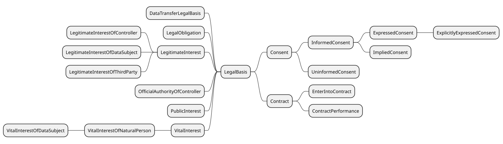
Legal Bases in DPV
Please refer to legal basis page for additional documentation, examples, references, and best practices. This document provides only a brief summary of the legal basis concepts.
DPV provides the following categories of legal bases based on [[GDPR]] Article 6: consent of the data subject, contract, compliance with legal obligation, protecting vital interests of individuals, legitimate interests, public interest, and official authorities. Though derived from GDPR, these concepts can be applied for other jurisdictions and general use-cases. The legal bases are represented by the concept [=LegalBasis=] and associated using the relation [=hasLegalBasis=].
When declaring a legal basis, it is important to denote under what law or jurisdiction that legal basis applies. For instance, using [=Consent=] as a legal basis has different obligations and requirements in EU (i.e. [[GDPR]]) as compared to other jurisdictions. Therefore, unless the information is to be implicitly interpreted through some specific legal lens or jurisdictional law, DPV recommends indicating the specific law or legal clause associated with the legal basis so as to scope its interpretation. This can be done using the relation [=hasJurisdiction=] or [=hasApplicableLaw=].
Extensions enable further extending the legal bases with jurisdiction-specific concepts. For example, the [[EU-GDPR]] and [[EU-DGA]] extensions provide legal bases from [[GDPR]] and [[DGA]] respectively. We welcome similar contributions for extending the GDPR extension as well as creating extensions for other laws and domains.
dpv:Consent: Consent of the Data Subject for specified process or activity
go to full definition
dpv:Contract: Creation, completion, fulfilment, or performance of a contract involving specified processing of data or technologies
go to full definition
dpv:ContractPerformance: Fulfilment or performance of a contract involving specified processing of data or technologies
go to full definition
dpv:EnterIntoContract: Processing necessary to enter into contract
go to full definition
dpv:DataTransferLegalBasis: Specific or special categories and instances of legal basis intended for justifying data transfers
go to full definition
dpv:LegalObligation: Legal Obligation to conduct the specified activities
go to full definition
dpv:LegitimateInterest: Legitimate Interests of a Party as justification for specified activities
go to full definition
dpv:LegitimateInterestOfController: Legitimate Interests of a Data Controller in conducting specified activities
go to full definition
dpv:LegitimateInterestOfDataSubject: Legitimate Interests of the Data Subject in conducting specified activities
go to full definition
dpv:LegitimateInterestOfThirdParty: Legitimate Interests of a Third Party in conducting specified activities
go to full definition
dpv:OfficialAuthorityOfController: Activities are necessary or authorised through the official authority granted to or vested in the Data Controller
go to full definition
dpv:PublicInterest: Activities are necessary or beneficial for interest of the public or society at large
go to full definition
dpv:VitalInterest: Activities are necessary or required to protect vital interests of a data subject or other natural person
go to full definition
dpv:VitalInterestOfNaturalPerson: Activities are necessary or required to protect vital interests of a natural person
go to full definition
dpv:VitalInterestOfDataSubject: Activities are necessary or required to protect vital interests of a data subject
go to full definition
Contract
The concept [=Contract=] represents a legal contract, which can be used as a legal basis through the [=hasLegalBasis=] relation to justify data processing or use of technologies.
Contract Types
Contract types represent the vocabulary of contract types which reflects the way contracts are defined and interpreted towards specific purposes. For example, [=DataProcessingAgreement=] represents contract concepts typically used for processes involving (personal) data, [=ContractByEntityType=] represents contracts such as B2B (Business-to-Business), B2C (Business-to-Consumer), etc., and [=ContractByDomain=] represent contracts with specific interpretations such as for licensing agreements and employment.
dpv:ContractByDomain: A generic concept representing contracts categorised by specific domains which dictate the drafting and interpretation of contracts
go to full definition
dpv:DistributionAgreement: A contract regarding supply of data or technologies between a distributor and a supplier
go to full definition
dpv:EmploymentContract: A contract regarding employment between an employer and an employee
go to full definition
dpv:LicenseAgreement: A Legal Document providing permission to utilise data or resource and outlining the conditions under which such use is considered valid
go to full definition
dpv:EULA: End User License Agreement is a contract entered into between a software (or service) developer or provider with the (end-)user
go to full definition
dpv:ServiceLevelAgreement: A contract regarding the provision of a service which outlines the acceptable metrics and performance of the service for the consumer
go to full definition
dpv:ContractByEntityType: A generic concept representing contracts categorised by the type of entities involved - such as Businesses (B), Consumers (C), and Governments (G)
go to full definition
dpv:G2BContract: A contract between a government and a business
go to full definition
dpv:G2CContract: A contract between a government and consumers
go to full definition
dpv:G2GContract: A contract between two governments or government departments or units
go to full definition
dpv:ContractByNegotiationType: A generic concept representing contracts categorised based on their use or absence of negotiation in the contract forming process
go to full definition
dpv:NegotiatedContract: A contract where the terms and conditions are determined with all parties having the ability to negotiate the terms and conditions
go to full definition
dpv:StandardFormContract: A contract where the terms and conditions are determined by one or more of the parties, and the other parties have negligible or no ability to negotiate the terms and conditions
go to full definition
dpv:ConsumerStandardFormContract: A contract where the terms and conditions are determined by parties in the role of a 'consumer' - whether an entity or an individual, and the other parties have negligible or no ability to negotiate the terms and conditions
go to full definition
dpv:ProviderStandardFormContract: A contract where the terms and conditions are determined by parties in the role of a 'provider', and the other parties have negligible or no ability to negotiate the terms and conditions
go to full definition
dpv:DataProcessingAgreement: An agreement outlining conditions, criteria, obligations, responsibilities, and specifics for carrying out processing of data
go to full definition
dpv:DataControllerContract: Creation, completion, fulfilment, or performance of a contract, with Data Controllers as parties being Joint Data Controllers, and involving specified processing of data or technologies. NOTE: This concept is being deprecated - use dpv:JointDataControllersAgreement which has a more explicit definition of the entities involved and the intent of the contract
go to full definitiondeprecated in next version
dpv:JointDataControllersAgreement: An agreement outlining conditions, criteria, obligations, responsibilities, and specifics for carrying out processing of data between Controllers within a Joint Controllers relationship
go to full definition
dpv:DataProcessorContract: Creation, completion, fulfilment, or performance of a contract, with the Data Controller and Data Processor as parties, and involving specified processing of data or technologies. NOTE: This concept is being deprecated - use dpv:ControllerProcessorAgreement which has a more explicit definition of the entities involved and the intent of the contract
go to full definitiondeprecated in next version
dpv:ControllerProcessorAgreement: An agreement outlining conditions, criteria, obligations, responsibilities, and specifics for carrying out processing of data between a Data Controller and a Data Processor
go to full definition
dpv:DataSubjectContract: Creation, completion, fulfilment, or performance of a contract, with the Data Controller and Data Subject as parties, and involving specified processing of data or technologies. NOTE: This concept is being deprecated - use dpv:ControllerDataSubjectAgreement which has a more explicit definition of the entities involved and the intent of the contract
go to full definitiondeprecated in next version
dpv:ControllerDataSubjectAgreement: An agreement outlining conditions, criteria, obligations, responsibilities, and specifics for carrying out processing of data between a Data Controller and a Data Subject
go to full definition
dpv:SubProcessorAgreement: An agreement outlining conditions, criteria, obligations, responsibilities, and specifics for carrying out processing of data between a Data Processor and a Data (Sub-)Processor
go to full definition
dpv:ThirdPartyContract: Creation, completion, fulfilment, or performance of a contract, with the Data Controller and Third Party as parties, and involving specified processing of data or technologies. NOTE: This concept is being deprecated - use dpv:ThirdPartyAgreement which has a more explicit definition of the entities involved and the intent of the contract
go to full definitiondeprecated in next version
dpv:ThirdPartyAgreement: An agreement outlining conditions, criteria, obligations, responsibilities, and specifics for carrying out processing of data between a Data Controller or Processor and a Third Party
go to full definition
Contract Status
To represent the status associated with a contract, the concept [=ContractStatus=] and the relation [=hasContractStatus=] are provided. A taxonomy of statuses representing the lifecycle of contract formation and use is provided, for example [=ContractDrafted=] to indicate the completion of contract drafting process, [=ContractUnderNegotiation=] to indicate the contents of the contract are being negotiated and that the contract is being accepted/signed by involved parties, [=ContractFullySigned=] indicating all parties have signed the contract, and [=ContractTerminated=] indicating the contract has been terminated.
[=ContractFulfilmentStatus=] represents the status associated with fulfilment of a contract in terms of its requirements and obligations. It is associated using the relation [=hasContractualFulfilmentStatus=]. Specific fulfilment states are provided, for example [=ContractFulfilled=] indicating all requirements of the contract have been fulfilled, [=ContractBreached=] indicating a breach of contract, and [=ContractNotFulfilled=] indicating the requirements have not been fulfilled (but it isn't a breach yet e.g. there is still time/opportunity to complete them).
dpv:ContractActivationStatus: Status associated with activation of a contract i.e. whether its terms are active and are required to be performed
go to full definition
dpv:ContractActive: Status representing contract that has been fully executed and whose terms are considered active i.e. they are applicable and are required to be performed
go to full definition
dpv:ContractInactive: Status representing contract that has been fully executed and whose terms are not yet active i.e. they need to be performed at a later time
go to full definition
dpv:ContractExecutionStatus: Status associated with execution of a contract (i.e. signing and procedural aspects before the contract terms come in to effect)
go to full definition
dpv:ContractFullyExecuted: Status representing contract has been fully executed i.e. it has been signed by all parties and all other procedural aspects such as exchange of signed contract copies have been completed
go to full definition
dpv:ContractFullySigned: Status representing contract has been signed by all concerned parties
go to full definition
dpv:ContractPartiallySigned: Status representing contract has been partially signed by parties i.e. some parties have signed the contract and others are yet to make a decision to sign it
go to full definition
dpv:ContractSignedByParty: Status representing contract has been signed by the indicated signing party
go to full definition
dpv:ContractFulfilmentStatus: Status associated with fulfilment of a contract
go to full definition
dpv:ContractFulfilled: Status representing contract where all its terms have been fulfilled in a manner that does not constitute a violation or breach of the contract
go to full definition
dpv:ContractNotFulfilled: Status representing contract where none of its terms have been fulfilled in a manner that does not constitute a violation or breach of the contract i.e. there is still time and opportunity to complete the terms
go to full definition
dpv:ContractPartiallyFulfilled: Status representing contract where some of its terms have been fulfilled, and others are yet to be fulfilled in a manner that does not constitute a violation or breach of the contract i.e. there is still time and opportunity to complete the terms
go to full definition
dpv:ContractViolated: Status representing contract where one or more terms have not been fulfilled or have been fulfilled, where either is considered a violation of the terms
go to full definition
dpv:ContractPerformanceStatus: Status associated with performance of a contract
go to full definition
dpv:ContractAmended: Status representing contract that has been fully executed and whose terms have been amended through mutual agreement or other means such that the contract is still required to be performed
go to full definition
dpv:ContractBeingPerformed: Status representing contract that has been fully executed and whose terms are being carried out i.e. the contract is being performed
go to full definition
dpv:ContractRenewed: Status representing contract being renewed with new duration and/or applicability where the contract has been fully executed in the past
go to full definition
dpv:ContractTemporarilySuspended: Status representing contract that has been temporarily suspended through mutual agreement or by some parties
go to full definition
dpv:ContractPreparationStatus: Status associated with preparation of contracts before they are signed or accepted or executed
go to full definition
dpv:ContractApproved: Status representing contract has been approved and can be used for signing
go to full definition
dpv:ContractDrafted: Status representing the drafting of contract text has been completed and it can now be offered for signing
go to full definition
dpv:ContractNegotiated: Status representing contract has been successfully negotiated by involved parties
go to full definition
dpv:ContractOffered: Status representing contract has been offered to a party or to parties for reviewing and signing
go to full definition
dpv:ContractRejected: Status representing contract has been rejected and cannot be used for signing
go to full definition
dpv:ContractUnderNegotiation: Status representing contract is under negotiation between parties
go to full definition
dpv:ContractUnderReview: Status representing contract is under review and is being considered for signing
go to full definition
dpv:ContractTerminationStatus: Status associated with termination of a contract
go to full definition
dpv:ContractBreached: Status representing contract being breached where its terms are not fulfilled or are violated with legal consequences
go to full definition
dpv:ContractDisputed: Status representing contract being disputed where one or more parties have an issue regarding the interpretation and performance of the contract
go to full definition
dpv:ContractExpired: Status representing reaching the expiry defined in the contract, such as when the stated duration or the stated obligations have been completed
go to full definition
dpv:ContractExtended: Status representing the duration associated with a contract being extended through mutual agreement or by a party
go to full definition
dpv:ContractTerminated: Status representing contract being terminated by one or more parties
go to full definition
Contractual Clauses
[=ContractualClause=] represents the contents of a contract, commonly referred to as 'clauses' or 'terms' or 'conditions'. They are associated with a contract using the relation [=hasContractualClause=]. A taxonomy is provided to represent commonly utilised clauses. The concept [=ContractualClauseFulfilmentStatus=] represents the fulfilment state of the contractual clause, and is indicated using the relation [=hasContractualFulfilmentStatus=].
dpv:ContractualClause: A part or component within a contract that outlines its specifics
go to full definition
dpv:ContractAmendmentClause: A provision describing how changes or modifications to the contract can be made and the process for implementing them
go to full definition
dpv:ContractConfidentialityClause: A provision requiring parties to keep certain information confidential and not disclose it to third parties
go to full definition
dpv:ContractDefinitions: A section specifying the meanings of key terms and phrases used throughout the contract
go to full definition
dpv:ContractDisputeResolutionClause: A provision detailing the methods and procedures for resolving disagreements or conflicts arising from the contract
go to full definition
dpv:ContractJurisdictionClause: A provision specifying the legal jurisdiction or court where disputes related to the contract will be resolved
go to full definition
dpv:ContractPreamble: An introductory section outlining the background, context, and purpose of the contract
go to full definition
dpv:ContractTerminationClause: A provision outlining the conditions under which the contract can be terminated before its completion, including any penalties or obligations
go to full definition
dpv:TermsOfService: Contractual clauses outlining the terms and conditions regarding the provision of a service, typically between a service provider and a service consumer, also know as 'Terms of Use' and 'Terms and Conditions' and commonly abbreviated as TOS, ToS, ToU, or T&C
go to full definition
dpv:ContractualClauseFulfilmentStatus: Status associated with fulfilment of a contractual clause
go to full definition
dpv:ContractualClauseFulfilled: Status indicating the terms of the contractual clause are fulfilled i.e. they have been successfully completed without violation
go to full definition
dpv:ContractualClauseNotFulfilled: Status indicating the terms of the contractual clause have not yet been fulfilled in a manner that does not constitute a violation i.e. there is still an opportunity to complete them
go to full definition
dpv:ContractualClausePartiallyFulfilled: Status indicating some of the terms of the contractual clause have been fulfilled, and others have not yet been fulfilled in a manner that does not constitute a violation i.e. there is still an opportunity to complete them
go to full definition
dpv:ContractualClauseViolated: Status indicating the terms of the contractual clause have been violated
go to full definition
Contract Controls
[=ContractControl=] represents a control for an entity to make or exercise a decision regarding a contract. A taxonomy of common controls is provided, for example [=AcceptContract=], [=OfferContract=], and [=TerminateContract=]. The relation [=hasContractControl=] is used to associate the control with a contract or clause. Controls can be used to indicate where specific actions can be taken, for example to indicate that accepting a contract can be done by sending a request or visiting the stated URL, or to express specific requirements which must be satisfied before the action can be completed, for example to state termination of a contract occurs over a duration.
dpv:ContractControl: The control or activity associated with accepting, refusing, and other actions associated with a contract
go to full definition
Consent in DPV is a specific legal basis representing information associated with consent rather than only given consent. Common information associated with consent includes tasks such as keeping track of whether "consent has been given/obtained", "issuing a consent request", and "withdrawing consent", as well as expressing requirements through terms such as "informed" and "explicit". To assist with representing these concepts as well as keeping records about how they are being applied, DPV provides the following consent concepts.
[=Consent=] - a type of legal basis representing consent of the individual.
Consent Types - to represent criteria for consent, such as [=InformedConsent=] and [=ExplicitlyExpressedConsent=].
Consent Status - to represent and keep track of what state/status/stage the consenting process is at, for example indicating the journey or lifecycle from [=ConsentRequested=] to [=ConsentGiven=] and then [=ConsentWithdrawn=].
Consent Controls - to indicate information about how to obtain or provide or reaffirm consent.
To indicate the duration or validity of a given consent instance, the existing contextual relation [=hasDuration=] along with specific forms of [=Duration=] can be used. For example, to indicate consent is valid until a specific event such as account closure, the duration subtype [=UntilEventDuration=] can be used with additional instantiation or annotation to indicate more details about the event (in this case the closure of account). Similarly, [=UntilTimeDuration=] indicates validity until a specific time instance or timestamp (e.g. 31 December 2022), and [=TemporalDuration=] indicates a relative time duration (e.g. 6 months). To indicate validity without an end condition, [=EndlessDuration=] can be used. To indicate the notice used for informed consent, the concept [=ConsentNotice=] is provided, which can be used with the relation [=hasNotice=].
To specify consent provided by delegation, such as in the case of a parent or guardian providing consent for/with a child, the [=isIndicatedBy=] relation can be used to associate the parent or guardian responsible for providing consent (or its affirmation). Since by default the consent is presumed to be provided by the individual, when such individuals are associated with their consent, i.e. through [=hasDataSubject=], the additional information provided by [=isIndicatedBy=] can be considered redundant and is often omitted.
[=ConsentControl=] represents information about how to exercise a control regarding consent. To indicate how an organisation obtains consent, the concept [=ObtainConsent=] is provided. Its corresponding concept [=ProvideConsent=] specifies how a data subject can indicate their consent (decision). The concept [=ReaffirmConsent=] is used to indicate how to perform reaffirmation or confirmation of a previous control (e.g. provide or obtain consent). To associate consent controls, the relation [=hasConsentControl=] is provided. Consent controls are defined by extending relevant [=EntityInvolvement=] concepts [=OptingInToProcess=] and [=WithdrawingFromProcess=].
Consent Types
dpv:InformedConsent: Consent that is informed i.e. with the requirement to provide sufficient information to make a consenting decision
go to full definition
dpv:ExpressedConsent: Consent that is expressed through an action intended to convey a consenting decision
go to full definition
dpv:ExplicitlyExpressedConsent: Consent that is expressed through an explicit action solely conveying a consenting decision
go to full definition
dpv:ImpliedConsent: Consent that is implied indirectly through an action not associated solely with conveying a consenting decision
go to full definition
dpv:UninformedConsent: Consent that is uninformed i.e. without requirement to provide sufficient information to make a consenting decision
go to full definition
Consent Status
dpv:ConsentStatus: The state or status of 'consent' that provides information reflecting its operational status and validity for processing data
go to full definition
dpv:ConsentStatusInvalidForProcessing: States of consent that cannot be used as valid justifications for processing data
go to full definition
dpv:ConsentExpired: The state where the temporal or contextual validity of consent has 'expired'
go to full definition
dpv:ConsentInvalidated: The state where consent has been deemed to be invalid
go to full definition
dpv:ConsentRequestDeferred: State where a request for consent has been deferred without a decision
go to full definition
dpv:ConsentRequested: State where a request for consent has been made and is awaiting a decision
go to full definition
dpv:ConsentRevoked: The state where the consent is revoked by an entity other than the data subject and which prevents it from being further used as a valid state
go to full definition
dpv:ConsentUnknown: State where information about consent is not available or is unknown
go to full definition
dpv:ConsentWithdrawn: The state where the consent is withdrawn or revoked specifically by the data subject and which prevents it from being further used as a valid state
go to full definition
dpv:ConsentStatusValidForProcessing: States of consent that can be used as valid justifications for processing data
go to full definition
dpv:RenewedConsentGiven: The state where a previously given consent has been 'renewed' or 'refreshed' or 'reaffirmed' to form a new instance of given consent
go to full definition
Consent Controls
dpv:ConsentControl: The control or activity associated with obtaining, providing, withdrawing, or reaffirming consent
go to full definition
dpv:ManageConsent: Control for managing a given consent in terms of providing, reaffirming, or withdrawing it
go to full definition
Statuses for Other Legal Basis
In addition to Contract and Consent, DPV also models other legal basis which include [=LegalObligation=], [=LegitimateInterest=], [=OfficialAuthorityOfController=], [=PublicInterest=], and [=VitalInterest=]. The following taxonomy provides statuses for modelling their use.
dpv:LegalObligationStatus: Status associated with use of Legal Obligation as a legal basis
go to full definition
dpv:LegalObligationCompleted: Status where the legal obligation has been completed
go to full definition
dpv:LegalObligationOngoing: Status where the legal obligation is being fulfilled
go to full definition
dpv:LegalObligationPending: Status where the legal obligation has not been started
go to full definition
dpv:LegitimateInterestStatus: Status associated with use of Legitimate Interest as a legal basis
go to full definition
dpv:LegitimateInterestInformed: Status where the Legitimate Interest was informed to the data subject or other relevant entities
go to full definition
dpv:LegitimateInterestNotObjected: Status where the use of Legitimate Interest was not objected to
go to full definition
dpv:LegitimateInterestObjected: Status where the use of Legitimate Interest was objected to
go to full definition
dpv:LegitimateInterestUninformed: Status where the Legitimate Interest was not informed to the data subject or other relevant entities
go to full definition
dpv:OfficialAuthorityExerciseStatus: Status associated with use of Official Authority as a legal basis
go to full definition
dpv:OfficialAuthorityExerciseCompleted: Status where the official authority has been exercised to completion
go to full definition
dpv:OfficialAuthorityExerciseOngoing: Status where the official authority is being exercised
go to full definition
dpv:OfficialAuthorityExercisePending: Status where the official authority has not been exercised
go to full definition
dpv:PublicInterestStatus: Status associated with use of Public Interest as a legal basis
go to full definition
dpv:PublicInterestCompleted: Status where the public interest activity has been completed
go to full definition
dpv:PublicInterestObjected: Status where the public interest activity was objected to by the Data Subject or another relevant entity
go to full definition
dpv:PublicInterestOngoing: Status where the public interest activity is ongoing
go to full definition
dpv:PublicInterestPending: Status where the public interest activity has not started
go to full definition
dpv:VitalInterestStatus: Status associated with use of Vital Interest as a legal basis
go to full definition
dpv:VitalInterestCompleted: Status where the vital interest activity has been completed
go to full definition
dpv:VitalInterestObjected: Status where the vital interest activity was objected to by the Data Subject or another relevant entity
go to full definition
dpv:VitalInterestOngoing: Status where the vital interest activity is ongoing
go to full definition
dpv:VitalInterestPending: Status where the vital interest activity has not started
go to full definition
Location & Jurisdiction
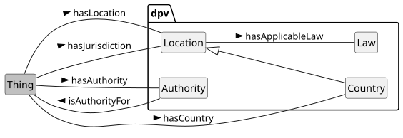
Please refer to location & jurisdiction page for additional documentation, examples, references, and best practices. This document provides only a brief summary of the location & jurisdiction concepts.
To represent location, the concept [=Location=] along with relations [=hasLocation=] is provided. For geo-political locations, the concepts such as [=Country=] and [=SupraNationalUnion=] are provided, with [=hasCountry=] and [=ThirdCountry=] with [=hasThirdCountry=] provided for convenience in common uses (e.g. data storage, transfers).
To define contextual location concepts, such as there being several locations, or that the location is 'local' to an event, DPV provides two concepts. [=LocationFixture=] specifies whether the location is 'fixed' or 'deterministic', with subtypes for fixed single, fixed multiple, and variable locations. [=LocationLocality=] specifies whether the location is 'local' within the context, with subtypes for local, remote, within a device, or in cloud.
To represent locations as jurisdictions, the relation [=hasJurisdiction=] is provided. The concept [=Law=] represents an official or authoritative law or regulation created by a government or an authority. To indicate applicability of laws within a jurisdiction, the relation [=hasApplicableLaw=] is provided.
The [[[LEGAL]]] provides taxonomies extending these concepts, such as to represent specific countries, their laws, authorities, memberships, adequacy decisions, and other information.
dpv:Law: A law is a set of rules created by government or authorities
go to full definition
dpv:Location: A location is a position, site, or area where something is located
go to full definition
dpv:Jurisdiction: A jurisdiction represents the locations that define the extent of authority (or control) claimed, granted, or asserted by a legal entity (in particular a legal authority) to govern or enforce rules
go to full definition
dpv:Country: A political entity indicative of a sovereign or non-sovereign territorial state comprising of distinct geographical areas
go to full definition
dpv:Region: A region is an area or site that is considered a location
go to full definition
dpv:City: A region consisting of urban population and commerce
go to full definition
dpv:ThirdCountry: Represents a country outside applicable or compatible jurisdiction as outlined in law
go to full definition
dpv:EconomicUnion: A political union of two or more countries based on economic or trade agreements
go to full definition
dpv:InverseJurisdiction: An inverse jurisdiction for a specific jurisdiction is the set of all other jurisdictions that are not part of the specific jurisdiction
go to full definition
dpv:SupraNationalUnion: A political union of two or more countries with an establishment of common authority
go to full definition
dpv:LocationLocality: Locality refers to whether the specified location is local within some context, e.g. for the user
go to full definition
dpv:PrivateLocation: Location that is not or cannot be accessed by the public and is controlled as a private space
go to full definitiondeprecated in next version
dpv:PublicLocation: Location that is or can be accessed by the public
go to full definitiondeprecated in next version
dpv:WithinDevice: Location is local and entirely within a device, such as a smartphone
go to full definitiondeprecated in next version
dpv:CloudLocation: Location that is in the 'cloud' i.e. a logical location operated over the internet
go to full definition
dpv:PrivateSpace: A space that is owned or controlled by a private entity and where access to members of the public is restricted
go to full definition
dpv:HybridPublicPrivateSpace: A space that is a hybrid space i.e it has both public and private components - such as by having part of it be a private space or which is operated privately
go to full definition
dpv:PrivatelyOperatedPublicSpace: A space that is operated or managed by a private entity but which is accessible to the public e.g. a public bus station operated by a specific company
go to full definition
dpv:PrivatelyOwnedPublicSpace: A space that is privately owned but which is accessible and usable by the public - whether freely or through a process which is open to all members of the public e.g. hotel lobby, shopping mall atriums
go to full definition
dpv:PersonalSpace: A private space associated with an individual in a personal capacity - such as their home or the space around their physical person e.g. my home or my room
go to full definition
dpv:PrivateCommunalSpace: A space that is accessible to a group or a community within a private space and where members of the public do not have access to it e.g. society amenities such as gyms and pools
go to full definition
dpv:PrivatelyOwnedSpace: A place that is privately owned e.g. offices, malls
go to full definition
dpv:PrivatelyOwnedPublicSpace: A space that is privately owned but which is accessible and usable by the public - whether freely or through a process which is open to all members of the public e.g. hotel lobby, shopping mall atriums
go to full definition
dpv:SemiPrivateSpace: A private space that acts as a shared space with other entities but which is still essentially private for the individuals e.g. a semi-private hospital room shared with another patient
go to full definition
dpv:PublicSpace: Any space that is accessible to the public or is owned by the public
go to full definition
dpv:HybridPublicPrivateSpace: A space that is a hybrid space i.e it has both public and private components - such as by having part of it be a private space or which is operated privately
go to full definition
dpv:PrivatelyOperatedPublicSpace: A space that is operated or managed by a private entity but which is accessible to the public e.g. a public bus station operated by a specific company
go to full definition
dpv:PrivatelyOwnedPublicSpace: A space that is privately owned but which is accessible and usable by the public - whether freely or through a process which is open to all members of the public e.g. hotel lobby, shopping mall atriums
go to full definition
dpv:PubliclyAccessibleSpace: A space that is accessible to all members of the public e.g. parks, malls, train stations
go to full definition
dpv:PrivatelyOperatedPublicSpace: A space that is operated or managed by a private entity but which is accessible to the public e.g. a public bus station operated by a specific company
go to full definition
dpv:PubliclyOwnedSpace: A space that is owned by the public e.g. national parks, forests
go to full definition
dpv:WithinPhysicalEnvironment: Location is local and entirely within a physical environment, such as a room
go to full definitiondeprecated in next version
dpv:WithinVirtualEnvironment: Location is local and entirely within a virtual environment, such as a software system
go to full definitiondeprecated in next version
dpv:LocationFixture: The fixture of location refers to whether the location is fixed
go to full definition
dpv:DecentralisedLocations: Location that is spread across multiple separate areas with no distinction between their importance
go to full definition
dpv:FederatedLocations: Location that is federated across multiple separate areas with designation of a primary or central location
go to full definition
dpv:FixedLocation: Location that is fixed i.e. known to occur at a specific place
go to full definition
dpv:FixedMultipleLocations: Location that is fixed with multiple places e.g. multiple cities
go to full definition
dpv:FixedSingularLocation: Location that is fixed at a specific place e.g. a city
go to full definition
dpv:VariableLocation: Location that is known but is variable e.g. somewhere within a given area
go to full definition
Risk and Impact Assessment
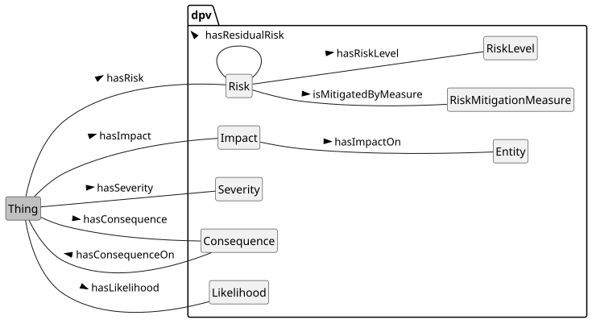
Please refer to risk page for additional documentation, examples, references, and best practices. This document provides only a brief summary of the risk concepts.
For risk management, DPV's provides a lightweight risk ontology based on commonly utilised concepts regarding risk mitigation and risk management. While these concepts permit rudimentary association of risks and mitigations within a use-case, it is important to note that DPV (currently)
does not provide comprehensive concepts for risk management.
For more developed representations of risk assessment, mitigation, and management vocabularies, we suggest the adoption of relevant standards, such as the ISO/IEC 31000 series, and welcome contribution for their representation within DPV through [[[RISK]]].
dpv:Likelihood: The likelihood or probability or chance of something taking place or occurring
go to full definition
dpv:RiskAssessment: Assessment involving identification, analysis, and evaluation of risk
go to full definition
dpv:ImpactAssessment: Calculating or determining the likelihood of impact of an existing or proposed process, which can involve risks or detriments.
go to full definition
dpv:DataTransferImpactAssessment: Impact Assessment for conducting data transfers
go to full definition
dpv:RightsImpactAssessment: Impact assessment which involves determining the impact on rights and freedoms
go to full definition
dpv:DataBreachImpactAssessment: Impact Assessment concerning the consequences and impacts of a data breach
go to full definition
dpv:DPIA: Impact assessment determining the potential and actual impact of processing activities on individuals or groups of individuals and taking into account the impacts of activities on their rights and freedoms
go to full definition
dpv:FRIA: Impact assessment which assesses the potential and actual impact on fundamental rights occurring due to processing activities
go to full definition
dpv:SecurityAssessment: Assessment of security intended to identity gaps, vulnerabilities, risks, and effectiveness of controls
go to full definition
dpv:CybersecurityAssessment: Assessment of cybersecurity capabilities in terms of vulnerabilities and effectiveness of controls
go to full definition
dpv:RiskConcept: Parent concept for combining concepts associated with risk assessment such as actual and potential Risk, Risk Source, Consequences, and Impacts
go to full definition
dpv:Consequence: The consequence(s) possible or arising from specified context
go to full definition
dpv:ConsequenceAsSideEffect: The consequence(s) possible or arising as a side-effect of specified context
go to full definition
dpv:ConsequenceOfFailure: The consequence(s) possible or arising from failure of specified context
go to full definition
dpv:ConsequenceOfSuccess: The consequence(s) possible or arising from success of specified context
go to full definition
dpv:Impact: The impact(s) possible or arising as a consequence from specified context
go to full definition
dpv:Risk: A risk or possibility or uncertainty of negative effects, impacts, or consequences
go to full definition
dpv:ResidualRisk: Risk remaining after treatment or mitigation
go to full definition
dpv:RiskLevel: The magnitude of a risk expressed as an indication to aid in its management
go to full definition
dpv:RiskMitigationMeasure: Measures intended to mitigate, minimise, or prevent risk.
go to full definition
dpv:Severity: The magnitude of being unwanted or having negative effects such as harmful impacts
go to full definition
dpv:SensitivityLevel: Sensitivity' reflects the risk of impact if not secured or utilised with appropriate measures and controls e.g. for sensitive data
go to full definition
Rights and Rights Exercise
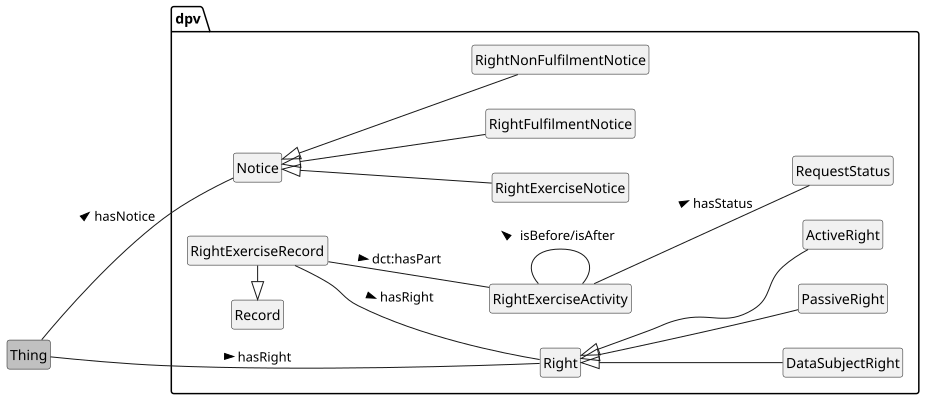
Please refer to rights page for additional documentation, examples, references, and best practices. This document provides only a brief summary of the rights concepts.
The concept [=Right=] represents a normative concept for what is permissible or necessary in accordance with a system such as laws. To associate rights with concepts that are relevant or within which those rights occur, the relation [=hasRight=] is used. Rights can be passive, which means they are always applicable without requiring anything to be done, or active where they require some action to be taken to initiate or exercise them. To represent these concepts, DPV uses [=PassiveRight=] and [=ActiveRight=] respectively. Rights can be applicable to different contexts or entities. To differentiate rights applicable or afforded to data subjects, the concept [=DataSubjectRight=] is used.
The information regarding how to exercise a right is provided through [=RightExerciseNotice=] and associated using the [=isExercisedAt=] relation. This information can specify contextual information through use of other concepts such as [=PersonalDataHandling=] to denote a necessary [=Purpose=] of [=IdentityVerification=] as part of the rights exercise.
A [=RightExerciseActivity=] represents a concrete instance of a right being exercised. It can include contextual information such as timestamps, durations, entities, etc. that can be part of record-keeping. An activity can be a single step related to rights exercise -- such as the initial request to exercise that right, or its acknowledgement, or the final step taken to fulfil the right (e.g. provide some information), or it can also be a single activity describing the entire rights exercise process(es). To collate related activities associated with a rights exercise (e.g. associated with a specific data subject or a specific request), the concept [=RightExerciseRecord=] is useful. The information provided to describe or in fulfilment of a right exercise is represented by [=RightFulfilmentNotice=] and that associated when a right exercise cannot be fulfilled is represented by [=RightNonFulfilmentNotice=].
dpv:RightNotice: Information associated with rights, such as which rights exist, when and where they are applicable, and other relevant information
go to full definition
dpv:RightExerciseNotice: Information associated with exercising of an active right such as where and how to exercise the right, information required for it, or updates on an exercised rights request
go to full definition
dpv:RightFulfilmentNotice: Notice provided regarding fulfilment of a right
go to full definition
dpv:RightNonFulfilmentNotice: Notice provided regarding non-fulfilment of a right
go to full definition
Rules
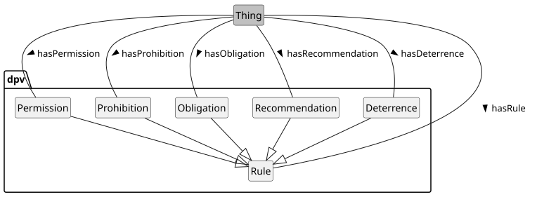
Please refer to rules page for additional documentation, examples, references, and best practices. This document provides only a brief summary of the rules concepts.
DPV provides the concept [=Rule=] to specify requirements, constraints, and other forms of 'rules' that are associated with specific contexts (e.g., processing activities) using the relation [=hasRule=]. DPV's rule concepts are aligned with the terms from [[[RFC2119]]] and with other existing uses such as in the [[[ODRL-MODEL]]].
Concept
RFC 2119 Keyword
[=Permission=]
MAY
[=Recommendation=]
SHOULD
[=Obligation=]
MUST
[=Prohibition=]
MUST NOT
[=Deterrence=]
SHOULD NOT
Not Provided
MAY NOT
dpv:AcceptableRule: A rule that is acceptable where it is either desirable if it occurs or it is not unacceptable if it does
go to full definition
dpv:Obligation: A rule describing an obligation for performing an activity
go to full definition
dpv:Permission: A rule describing a permission to perform an activity
go to full definition
dpv:Recommendation: A rule describing a recommendation for performing an activity
go to full definition
dpv:UnacceptableRule: A rule that is unacceptable where it is not desirable if it occurs
go to full definition
dpv:Deterrence: A rule describing a deterrence for performing an activity
go to full definition
dpv:Prohibition: A rule describing a prohibition to perform an activity
go to full definition
To support the documentation of rules and their evaluations, the concept [=RuleFulfilmentStatus=] is provided to indicate whether the rule has been used, has been fulfilled or is unfulfilled, or has been violated -- as enumerated below. These statuses are associated using [=hasFulfilmentStatus=].
dpv:RuleFulfilled: Status indicating a rule has been fulfilled, completed, or satisfied
go to full definition
dpv:DeterrenceFollowed: Status indicating a deterrence has been followed i.e. the activity stated as being deterred has not been carried out
go to full definition
dpv:ObligationFulfilled: Status indicating an obligation has been fulfilled i.e. the activity stated as being required to be carried out has been successfully completed
go to full definition
dpv:PermissionNotUtilised: Status indicating a permission has not been utilised i.e. the activity stated as being permitted has not been carried out
go to full definition
dpv:PermissionUtilised: Status indicating a permission has been utilised i.e. the activity stated as being permitted has been carried out
go to full definition
dpv:ProhibitionUnviolated: Status indicating a prohibition has not been violated i.e. the activity stated as being prohibited has not been carried out
go to full definition
dpv:RecommendationFollowed: Status indicating a recommendation has been followed i.e. the activity stated as being recommended has been carried out
go to full definition
dpv:RuleUnfulfilled: Status indicating a rule has not been fulfilled nor violated
go to full definition
dpv:DeterrenceNotFollowed: Status indicating a deterrence has not been followed i.e. the activity stated as being deterred has been carried out
go to full definition
dpv:ObligationUnfulfilled: Status indicating an obligation has not been fulfilled i.e. the activity stated as being required to be carried out has not been carried out but this is not considered as a violation e.g. there is still time to conduct the activity
go to full definition
dpv:RecommendationNotFollowed: Status indicating a recommendation has not been followed i.e. the activity stated as being recommended has not been carried out
go to full definition
dpv:RuleViolated: Status indicating a rule has been violated, breached, broken, or infracted
go to full definition
dpv:ObligationViolated: Status indicating an obligation has been violated i.e. the activity stated as being required to be carried out has not been carried out and this is considered as a violation i.e. the activity can no longer be carried out to fulfil the obligation
go to full definition
dpv:ProhibitionViolated: Status indicating a prohibition has been violated i.e. the activity stated as being prohibited has been carried out
go to full definition
Extensions
Structure of DPV vocabularies where DPV defines the core concepts which are then extended in specific extensions. The LEGAL extensions are named using ISO 3166-2 country codes, and contain specific extensions modelling laws within that jurisdiction. SECTOR and STANDARDS extensions also contain extensions within them modelling specific sectors and standards respectively.
To supplement the concepts and taxonomies in [[DPV]] for specific applications, use-cases, or to provide separation for better management of terms, we provide several extensions to the DPV.
Personal Data (PD)
[[[PD]]] provides additional concepts that extend the DPV's personal data taxonomy based on an opinionated structure contributed by R. Jason Cronk from EnterPrivacy. This separation is to enable adopters to decide whether the extension's concepts are useful to them, or to use other external vocabularies, or define their own.
Concepts within [[PD]] are broadly structured in top-down fashion by utilising their relevance and origin as:
Internal (within the person): e.g. Preferences, Knowledge, Beliefs
External (visible to others): e.g. Behavioural, Demographics, Physical, Sexual, Identifying
Household: e.g. personal or household activities
Social: e.g. Family, Friends, Professional, Public Life, Communication
Financial: e.g. Transactional, Ownership, Financial Account
Tracking: e.g. Location, Device based, Contact
Historical: e.g. Life History
Locations (LOC)
[[[LOC]]] provides additional concepts regarding locations such as countries and regions based on the ISO 3166 standards. It enables representing information such as processing takes place within Ireland, represented by loc:IE, or within European Union (EU) by using loc:EU. We are working on expanding this list to also specify regions, cities, and other pertinent location details, and welcome participation and contributions for this.
Risk Management (RISK)
[[[RISK]]] builds on top of the lightweight risk framework within DPV by providing the following extensive concepts related to risk assessment and management. We are in the process of identifying additional concepts and taxonomies for the risk extension, such as for risk management procedures and the creation of a risk ontology based on ISO standards.
Risk Controls - categories of measures such as those related to risk source, likelihood, consequence, vulnerability, as well as the intended effect in terms of monitoring, controlling, halting, removing, or reducing.
Consequences and Impacts - list of consequences such as data breaches, costs, identity theft and several others that are categorised based on DPV's impact framework i.e. damage, harm, or detriment.
Scale for Risk Levels, Severity, and Likelihood - a 7 point qualitative scale to express concepts associated with levels, severity, and likelihood of risk and its consequences.
Risk Matrix - an encoded form of risk matrices based on combinations of severity and likelihood along with the resulting risk level. Risk matrix nodes and values are provided for dimensions 3x3, 5x5, and 7x7.
Incidents, Reports, and Notices - specifying incidents such as security incidents or data breaches, documenting information about them, and notices used to communicate with other relevant entities such as authorities and data subjects.
Risk Management - risk management concepts based on ISO 31000 series.
Technologies (TECH)
[[[TECH]]] extends the DPV's terms to represent further specific details regarding technologies, their management, and relevance to actual real-world tools and systems. It provides concepts for the following:
Communication method: WiFi, Bluetooth, GPS, Cellular Network
Actors: Developer, Provider, User, Subject, etc.
Intended Use: what the technology was/is intended to be used for
Documentation: technical and user manuals and other documentation
Status: whether the technology has been released, has been provided, and other statuses
Tools: databases, cookies, etc.
The intention and aim of developing the TECH extension is to describe real-world tools and services, such as a specific cloud storage provider, and provide categorisation and metadata to connect it to DPV's concepts, such as to indicate the cloud storage instance features encryption at rest as a technical measure. Through these, the management and documentation of use-cases can be made easier by providing the relationships between tools/services and technical measures as a 'knowledge graph'.
Artificial Intelligence (AI)
The [[[AI]]] extension provides concepts specifically regarding AI by extending the [[TECH]] extension. It consists of:
Techniques such as machine learning and natural language programming
Capabilities such as image recognition and text generation
Lifecycle such as data collection, training, fine-tuning, etc.
Risks such as data poisoning, statistical noise and bias, etc.
Risk Measures to address the AI specific risks
Documentation such as Data Sheets and Model Cards
Data associated with AI development, training, validation, and use.
Systems and Models such as General Purpose, Robotics, Expert Systems.
Justifications
[[[JUSTIFICATIONS]]] provides concepts for use as 'justifications' with DPV. For example, where a right cannot be fulfilled, a justification such as 'identity could not be verified' is represented using a specific concept.
Legal Concepts (LEGAL)
[[[LEGAL]]] provides concepts to represent laws, authorities, and other legal concepts in various jurisdictions. It is structured to create a separate namespace for each country or jurisdiction by using the ISO 3166-2 code, for example IE represents Ireland and EU represents the European Union. Within this namespace, the specific laws and authorities for that jurisdiction are defined.
At the moment, the following jurisdictions are defined:
[[LEGAL-EU]] representing (only) the European Union, with each Member State within the EU/EEA region being defined in its own separate namespace and extension to allow modelling both EU and Country-level laws and knowledge without conflicts:
[[LEGAL-AT]] for Austria
[[LEGAL-BE]] for Belgium
[[LEGAL-BG]] for Bulgaria
[[LEGAL-CY]] for Cyprus
[[LEGAL-CZ]] for Czech Republic
[[LEGAL-DE]] for Germany
[[LEGAL-DK]] for Denmark
[[LEGAL-EE]] for Estonia
[[LEGAL-ES]] for Spain
[[LEGAL-FI]] for Finland
[[LEGAL-FR]] for France
[[LEGAL-GR]] for Greece
[[LEGAL-HR]] for Croatia
[[LEGAL-HU]] for Hungary
[[LEGAL-IE]] for Ireland
[[LEGAL-IS]] for Iceland
[[LEGAL-IT]] for Italy
[[LEGAL-LI]] for Liechtenstein
[[LEGAL-LT]] for Lithuania
[[LEGAL-LU]] for Luxembourg
[[LEGAL-LV]] for Latvia
[[LEGAL-MT]] for Malta
[[LEGAL-NL]] for Netherlands
[[LEGAL-NO]] for Norway
[[LEGAL-PL]] for Poland
[[LEGAL-PT]] for Portugal
[[LEGAL-RO]] for Romania
[[LEGAL-SE]] for Sweden
[[LEGAL-SI]] for Slovenia
[[LEGAL-SK]] for Slovakia
[[LEGAL-GB]] for Great Britain and Northern Ireland
[[LEGAL-HK]] for Hong Kong
[[LEGAL-IN]] for India
[[LEGAL-JP]] for Japan
[[LEGAL-KR]] for Republic of Korea
[[LEGAL-MO]] for Macao
[[LEGAL-MY]] for Malaysia
[[LEGAL-PH]] for the Philippines
[[LEGAL-SG]] for Singapore
[[LEGAL-TH]] for Thailand
[[LEGAL-TW]] for Taiwan
[[LEGAL-US]] for United States of America
Within the [[LEGAL-EU]] extension namespace, the following laws are defined as separate extensions with their own namespaces:
[[[EU-GDPR]]]
[[[EU-DGA]]]
[[[EU-NIS2]]]
[[[EU-AIAct]]]
[[[EU-EHDS]]]
[[[EU-RIGHTS]]]
Sector
[[SECTOR]] provides extensions modelling specific sectors by using those sector-specific concepts, terms, and modelling which extends the concepts in other DPV extensions. At the moment, it only extends the [=Purpose=] taxonomy in [[DPV]]. In the future, we plan to provide more concepts such as [=Data=] and [=PersonalData=] categories.
The following sectorial extensions are currently provided:
[[SECTOR-EDUCATION]] for Education Sector
[[SECTOR-FINANCE]] for Finance Sector
[[SECTOR-HEALTH]] for Health Sector
[[SECTOR-INFRA]] for (Critical) Infrastructure Sector
[[SECTOR-LAW]] for Law Enforcement & Justice Sector
[[SECTOR-PUBLICSERVICES]] for Public Services Sector
Standards
The STANDARD extensions model specific concepts and processes along with the terminology defined and used within specific standards. The goal of this is to represent concepts and processes defined in standards produced in forums such as ISO, CEN/CENELEC, NIST, and IEEE so that they can be used with DPV. It is not intended to duplicate the existing standards, especially when they are already provided as semantic web representations.
The following standards are currently provided:
[[STANDARD-P7012]] for [[[IEEE-P7012]]]
Notes
This document is based on inspiration from the following:
The DPVCG was established as part of the SPECIAL H2020 Project, which received funding from the European Union’s Horizon 2020 research and innovation programme under grant agreement No. 731601 from 2017 to 2019. Continued developments have been funded under: RECITALS Project funded under the EU's Horizon program with grant agreement No. 101168490.
Harshvardhan J. Pandit was funded to work on DPV from 2020 to 2022 by the Irish Research Council's Government of Ireland Postdoctoral Fellowship Grant#GOIPD/2020/790.
The ADAPT SFI Centre for Digital Media Technology is funded by Science Foundation Ireland through the SFI Research Centres Programme and is co-funded under the European Regional Development Fund (ERDF) through Grant#13/RC/2106 (2018 to 2020) and Grant#13/RC/2106_P2 (2021 onwards).
Funding Acknowledgements for Contributors
The contributions of Piero Bonatti and Luigi Sauro to the DPVCG have been funded by the European Union’s Horizon 2020 research and innovation programme under grant agreement N. 731601 (project SPECIAL) until 2019, and under grant agreement N. 883464 (project TRAPEZE) from 2020 until 2023.
The contributions of Beatriz Esteves, Delaram Golpayegani, and Rana Saniei have received funding through the PROTECT ITN Project from the European Union’s Horizon 2020 research and innovation programme under the Marie Skłodowska-Curie grant agreement No 813497, in particular through the development of AI Risk Ontology (AIRO) and Vocabulary of AI Risks (VAIR) which have been integrated in to this extension. Beatriz Esteves is funded by SolidLab Vlaanderen (Flemish Government, EWI and RRF project VV023/10), and by the imec.icon project PACSOI (HBC.2023.0752) which was co-financed by imec and VLAIO. Julian Flake received funding from the TITAN project funded under European Union’s Horizon Europe Framework Programme grant#101129822 and from the European Union’s Digital Europe Programme grant#101123471 (EDGE-Skills).
The contributions of Harshvardhan J. Pandit, Arthit Suriyawongkul, Delaram Golpayegani, and Rob Brennan have been made with the financial support of Science Foundation Ireland under Grant Agreement No. 13/RC/2106_P2 at the ADAPT SFI Research Centre. The contributions of Harshvardhan J. Pandit have been made with the AI Accountability Lab (AIAL) which is supported by grants from following groups: the AI Collaborative, an Initiative of the Omidyar Group; Luminate; the Bestseller Foundation; and the John D. and Catherine T. MacArthur Foundation.
Future Work
DPV concepts across serialisations
The table provides an overview of the expression of concepts across the three DPV serialisations. These may be expanded in the future, including to non-semantic-web serialisations.
Concept
Default
OWL
Semantics
[[RDF]], [[RDFS]], [[SKOS]]
[[RDF]], [[RDFS]], [[OWL]]
Concept/Term
skos:Concept
owl:Class
subtype relation
skos:broader
owl:subClassOf
instance/type relation
rdf:type
rdf:type
relations/association
rdf:Property
owl:ObjectProperty
relation domain
rdfs:domain
rdfs:domain
relation range
rdfs:range
rdfs:range
Changelog for v2.3-dev
total terms: 1165 ; added: 47 ; removed: 11
The changelog provides more information on concepts that have been added/removed in this version. Below is a summary of the changes.
Removed concepts include fixing typos in Contract Statuses, Rule Fulfilment Statuses, Rights Fulfilment Status and the property isOrganisationalUnitOf.
Rule and RuleFulfilmentStatus: Added new rule types (acceptable, unacceptable, recommendation, deterrence) and associated statuses along with properties.
ReuseCompatibility: Concepts describing reuse as primary and secondary use.
Location: Concepts representing jurisdiction, public/private spaces and ownership, and a property to indicate locations outside a reference concept.
Data: Concepts representing unstructured and uncategorised data.
Additional changes introduced in v2.2.1: fixed range of dpv:hasEntityControl to dpv:EntityInvolvement